CRONACHE & DADI
CRONACHE & DADI
[ONE-SHOT DUNGEON FIABESCO]
🎧 Accendi l'atmosfera...
Il Giardino di Auralis è un luogo in cui la natura sembra seguire regole proprie. Alberi giganteschi si intrecciano formando archi e passaggi sospesi, ruscelli attraversano prati ricoperti di fiori insoliti e specchi d'acqua riflettono cieli che non esistono. Tra le fronde si nascondono creature curiose, spiriti antichi e abitanti di un mondo che sembra uscito dalle pagine di una fiaba. Ogni regione custodisce meraviglie differenti: foreste primordiali, corti eleganti, stagni incantati e immense cavità sotterranee illuminate da cristalli e lanterne.
Ma la bellezza del Giardino di Auralis nasconde anche un lato imprevedibile. Sentieri che cambiano direzione, presenze che osservano da lontano, incontri inattesi e luoghi in cui il confine tra meraviglia e pericolo diventa sottile. Alcuni abitanti saranno disposti ad aiutare i viaggiatori, altri metteranno alla prova le loro intenzioni, mentre non tutte le offerte apparentemente generose nascondono buone intenzioni. Qui la forza non è sempre sufficiente per superare un ostacolo e, talvolta, la curiosità può condurre verso luoghi dai quali è difficile tornare. Il Giardino di Auralis è un mondo da esplorare, ma anche un luogo in cui ogni scelta può cambiare il corso del viaggio.
Nessuna mappa conosciuta riporta la posizione del Giardino di Auralis e nessuna strada conduce direttamente ai suoi confini. Si tratta di un antico territorio dimensionale, nato quando il mondo era ancora giovane e le leggi della natura non avevano assunto una forma definitiva. Al suo interno si estendono regioni dalle caratteristiche profondamente diverse, collegate da passaggi naturali e percorsi che sembrano appartenere a una realtà differente da quella conosciuta. Le praterie lasciano gradualmente spazio a foreste dalle radici monumentali, dove la vegetazione forma ponti e gallerie sospese. Più avanti, le acque si raccolgono in stagni impossibili, attraversati da cascate che risalgono verso il cielo, mentre eleganti giardini geometrici custodiscono padiglioni e fontane appartenenti a una corte fatata. Sotto la superficie si apre infine un vasto sistema di grotte, gallerie e insediamenti sotterranei, illuminati da cristalli, funghi e lanterne.
Il Giardino di Auralis non è un luogo disabitato: creature fatate, spiriti della natura, artigiani sotterranei e numerosi altri esseri hanno trovato qui la propria dimora. Ognuno segue abitudini, tradizioni e regole proprie, spesso incomprensibili per chi proviene dal mondo esterno. Per attraversare queste terre sarà necessario esplorare, stringere alleanze, superare prove e imparare a riconoscere i pericoli nascosti dietro le meraviglie del luogo.
Nel piccolo borgo di Eldermoor, la vita degli abitanti è stata sconvolta da un evento inspiegabile. Alba Valleriva, figlia di Lord Edric Valleriva, signore del villaggio, è caduta improvvisamente in uno stato di coma dal quale nessuno è riuscito a risvegliarla. Medici, guaritori e sacerdoti hanno tentato ogni rimedio conosciuto, senza ottenere alcun risultato. Il suo corpo è ancora vivo, ma la bambina non reagisce agli stimoli e sembra sprofondata in un sonno innaturale. Disperato, Lord Edric Valleriva ha iniziato a cercare qualcuno in grado di scoprire cosa sia accaduto alla figlia, offrendo una ricompensa a chiunque riesca a salvarla.
Quello che nessuno nel villaggio può sapere è che Alba non è semplicemente addormentata. Durante le notti precedenti al suo malore, la bambina ha iniziato a fare strani sogni: sentieri sconosciuti, alberi giganteschi e una voce gentile che la invitava a raggiungere un luogo meraviglioso. Quella voce appartiene alle megere, creature che da tempo cercano di raggiungere Dalia, l'essenza di una bambina, figlia di una divinità legata alla natura, nascosta nel Giardino di Auralis, un territorio antico e misterioso, popolato da creature provenienti da tradizioni e mondi differenti. Un luogo in cui la natura segue regole proprie, dove la vegetazione può assumere forme impossibili e i confini tra realtà, magia e immaginazione sono sottili. Attraverso sogni e illusioni, le megere attirano i bambini nel Giardino, sfruttando la loro curiosità. Le megere sanno che, se Dalia attraverserà volontariamente il confine insieme a un bambino, la sua essenza potrà raggiungere il mondo esterno attraverso il corpo di quest'ultimo. Nel caso di Alba, questo significherebbe il suo risveglio, ma non sarebbe più la stessa bambina: il suo corpo tornerebbe a vivere custodendo l'essenza di Dalia.
Le megere scoprirono l'esistenza del giardino grazie a un'antica fiaba, "Il Giardino perduto", un racconto tramandato nel corso delle generazioni che narrava di un luogo impossibile da trovare e di bambini che, seguendo misteriose luci tra gli alberi, non avevano mai fatto ritorno. Studiando quelle pagine e seguendo gli indizi nascosti nel racconto, riuscirono infine a individuare un accesso al luogo. Non potendolo raggiungere direttamente a causa delle difese magiche presenti, le megere trovarono un altro modo per avvicinarsi a lei: attirare bambini provenienti dal mondo esterno attraverso sogni e illusioni, sfruttando la loro curiosità e il desiderio di trovare nuovi amici. Alcuni riuscirono a raggiungere il Giardino di Auralis nel corso degli anni, molti si smarrirono lungo il cammino, scomparendo senza lasciare traccia. Nessuno fece mai ritorno a casa.
Non importa da dove veniate, quali strade abbiate percorso o cosa vi abbia spinti a intraprendere il vostro viaggio. Per una ragione o per un'altra, i vostri passi vi hanno condotti nei pressi di Eldermoor, un piccolo borgo lontano dalle grandi città e dai principali itinerari commerciali. È qui che giunge alle vostre orecchie una notizia inquietante: la figlia del signore locale è caduta in un sonno misterioso, dal quale nessuno è riuscito a risvegliarla. Lord Edric Valleriva, disperato, ha promesso una generosa ricompensa a chiunque riesca a scoprire cosa le sia accaduto e, soprattutto, a riportarla in salute.
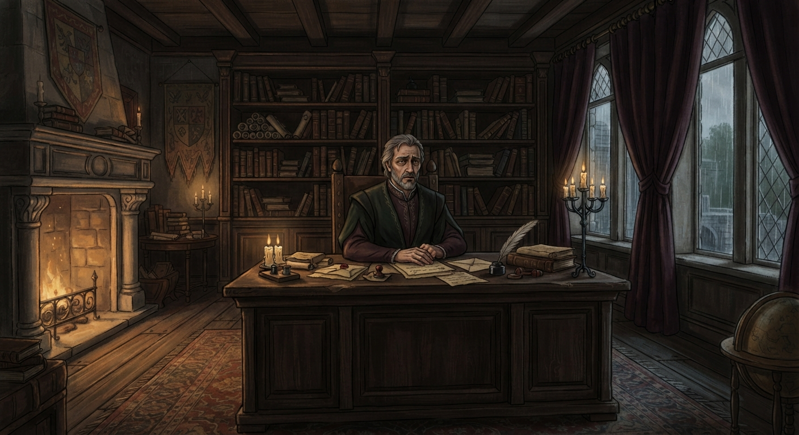
La pioggia batte leggera contro le alte finestre dello studio. Una volta entrati, vi trovate in una stanza ampia, arredata con mobili di legno scuro, scaffali colmi di libri e una grande scrivania sulla quale sono sparsi fogli, lettere e appunti. Un fuoco scoppietta nel camino, ma il calore sembra non riuscire a dissipare l'atmosfera cupa che avvolge la dimora. Ad attendervi c'è un uomo dall'aspetto distinto, sebbene profondamente provato. Il suo volto è stanco, gli occhi arrossati e le mani si stringono nervosamente l'una all'altra. È Lord Edric Valleriva, signore di Eldermoor.
“Vi ringrazio per aver risposto al mio appello. Immagino abbiate già sentito parlare di ciò che è accaduto a mia figlia. Alba... la mia bambina...”
L'uomo si interrompe per qualche istante, cercando di trattenere l'emozione.
“Da diversi giorni non si sveglia. All'inizio pensavamo fosse una febbre, qualcosa di passeggero. Abbiamo chiamato i migliori medici, poi i guaritori e persino alcuni chierici che hanno prestato servizio presso la mia famiglia per molti anni. Tutti hanno tentato di curarla, ma nessuno è riuscito a trovare una spiegazione.”
“Non è una malattia. Ne sono ormai convinti anche coloro che hanno cercato di aiutarci. Il suo corpo è vivo, il respiro regolare, il cuore batte normalmente... eppure mia figlia non è più qui. È come se una parte di lei fosse stata portata lontano.”
Torna a guardarvi, questa volta con un'espressione più seria.
“Qualche giorno fa, uno dei miei uomini mi ha riferito alcune voci provenienti dai boscaioli e dai cacciatori. Pare che, in una zona remota della foresta, si nasconda una piccola dimora abitata da alcune donne. Nessuno sa esattamente chi siano. C'è chi le descrive come vecchie guaritrici, chi come streghe... altri non vogliono nemmeno parlarne.”
“Non so se queste donne abbiano davvero qualcosa a che fare con quanto accaduto ad Alba. Ma non posso più permettermi di ignorare nessuna possibilità. Vi chiedo di raggiungere quel luogo, scoprire cosa sta succedendo e, se possibile, riportare mia figlia da me.”
Il Lord posa sul tavolo un piccolo sacchetto, il cui contenuto tintinna leggermente.
“Questa è soltanto una parte della ricompensa. Avrete il resto quando Alba sarà salva. Vi prego... non lasciate che mia figlia muoia in quel sonno.”
Dopo aver presentato la situazione, lascia spazio ai giocatori. Possono rivolgere a Lord Edric Valleriva tutte le domande che desiderano, chiedere ulteriori dettagli sulla condizione di Alba, informarsi sulle persone che hanno tentato di curarla oppure domandare di poter vedere la bambina. Lord Edric Valleriva è sinceramente preoccupato e disposto a collaborare. Non ha motivo di nascondere informazioni ai personaggi: risponderà per quanto gli è possibile, anche se non sempre sarà in grado di fornire spiegazioni precise. Informazioni che Lord Edric può fornire:
La stanza di Alba
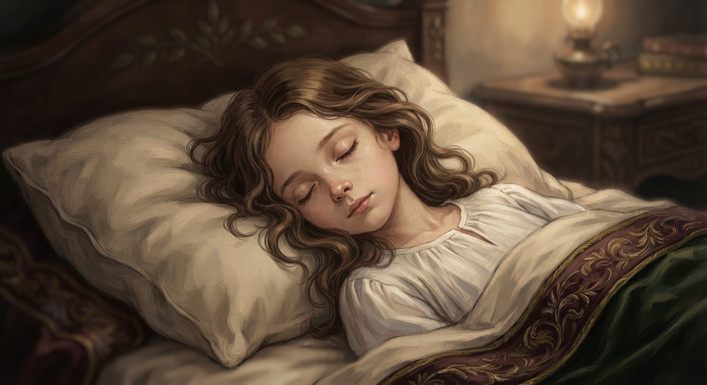
Se i personaggi chiedono di vedere la bambina, Lord Edric li accompagna nelle sue stanze. Alba giace nel proprio letto, immobile sotto le coperte. Il suo aspetto è quello di una bambina addormentata: il respiro è regolare, il volto disteso e non presenta ferite o segni evidenti di sofferenza. Lord Edric può autorizzare i personaggi a esaminarla liberamente. Non si oppone a controlli fisici o magici, purché non mettano in pericolo la figlia.Un esame più attento, tuttavia, può portare i personaggi a notare un particolare insolito: un simbolo impresso sulla mano della bambina. Attraverso una prova di Arcana, o una verifica equivalente prevista dal sistema utilizzato, i personaggi possono tentare di comprenderne la natura:
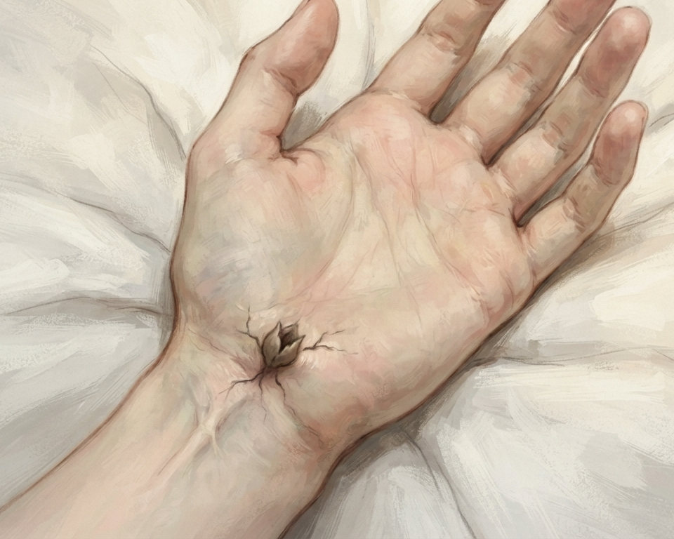
Il simbolo: è una manifestazione della magia stessa del Giardino di Auralis. Compare spontaneamente sulla mano di ogni individuo proveniente dal mondo esterno nel momento in cui la sua anima varca la soglia e accede al Giardino. In questa prima fase ha l'aspetto di un germoglio appena abbozzato, impresso nella pelle. Non provoca dolore né presenta effetti immediatamente riconoscibili. Un esame arcano può rivelare che non si tratta di una semplice alterazione della pelle, né di un incantesimo convenzionale. La sua natura sembra coinvolgere direttamente l'anima di chi lo porta, stabilendo un legame tra essa e il Giardino di Auralis. Il simbolo è destinato a svilupparsi progressivamente, estendendosi sulla mano man mano che l'individuo permane in quel luogo. Con il passare del tempo, il legame diventa sempre più profondo e l'anima si radica nel Giardino, rendendo sempre più difficile abbandonarlo e fare ritorno nel mondo esterno. La magia del marchio non sembra derivare da una maledizione o da un attacco intenzionale, ma appare piuttosto come una conseguenza naturale dell'accesso al Giardino stesso.Il Master può scegliere quali informazioni rivelare, anche soltanto in parte, in base al risultato della prova.
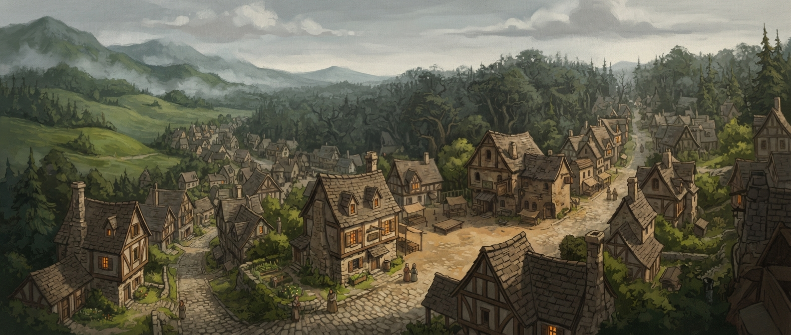
Il piccolo villaggio si raccoglie ai piedi di dolci colline, tra campi coltivati, pascoli e vecchie abitazioni in pietra e legno. Le strade acciottolate si snodano tra edifici modesti, botteghe e case dai tetti spioventi, mentre poco distante dal centro alcune abitazioni si affacciano su piccoli orti e cortili. Una piazza, animata solitamente dalle voci dei mercanti e dal viavai degli abitanti, appare oggi insolitamente silenziosa. Le strade sono meno frequentate del solito e gli abitanti parlano a bassa voce, scambiandosi occhiate preoccupate. La vicenda della piccola Alba è ormai sulla bocca di tutti, ma quando la conversazione si sposta sulla foresta, molti preferiscono cambiare argomento. Qualcuno racconta di aver visto luci muoversi tra gli alberi durante la notte. Altri parlano di voci che chiamano i viandanti per nome, provenienti da sentieri dove non dovrebbe esserci nessuno. C'è persino chi sostiene di aver incontrato tre donne anziane ai margini del bosco, ma nessuno sembra sapere da dove siano arrivate o dove siano dirette. Nonostante il clima di inquietudine, la vita del villaggio non si è fermata del tutto. Alcuni commercianti continuano a tenere aperte le proprie botteghe, mentre gli abitanti si dedicano alle faccende quotidiane, cercando di mantenere una parvenza di normalità.Questa scena offre ai personaggi la possibilità di esplorare liberamente Eldermoor, parlare con gli abitanti e procurarsi ciò di cui potrebbero avere bisogno prima di partire. Non è necessario che visitino ogni luogo o parlino con tutti: lascia che siano le loro domande e le loro iniziative a determinare quanto tempo trascorreranno nel villaggio.
Luoghi e possibilità di acquisto
Essendo un piccolo villaggio, Eldermoor non dispone di un mercato particolarmente sviluppato né di numerose attività commerciali. I personaggi possono trovare un piccolo emporio di generi comuni, dove acquistare viveri, razioni, acqua, corde, torce, lanterne, olio, coperte e altri oggetti utili per il viaggio. È presente anche una modesta officina di un fabbro, in cui è possibile acquistare o riparare attrezzi, armi semplici ed equipaggiamento in metallo, sebbene la disponibilità di armi e armature particolari sia piuttosto limitata. Il villaggio dispone inoltre di una locanda, dove i personaggi possono mangiare, bere e, se necessario, trovare una sistemazione per la notte. Si tratta anche di un luogo adatto per ascoltare le conversazioni degli abitanti e raccogliere ulteriori voci e testimonianze sulla foresta.
Il Master stabilirà prezzi, disponibilità e caratteristiche degli oggetti facendo riferimento al manuale del sistema utilizzato. Gli articoli più rari o specialistici potrebbero non essere reperibili.
Le voci degli abitanti
Se i personaggi decidono di parlare con gli abitanti di Eldermoor, possono raccogliere diverse testimonianze che contribuiscono ad alimentare i sospetti sulla foresta. Le condizioni di Alba hanno destato preoccupazione in tutto il villaggio, soprattutto tra le famiglie con bambini. Alcuni genitori raccontano che i propri figli hanno notato strane luci muoversi tra gli alberi e, incuriositi, hanno deciso di seguirle. Durante queste passeggiate avrebbero incontrato un'anziana signora che offriva loro dei biscotti e li invitava a raggiungerla nella sua abitazione, nascosta nel cuore della foresta. Altri abitanti sostengono invece di aver visto tre donne anziane aggirarsi nei pressi del bosco, ma nessuno sembra conoscerle né sapere da dove provengano.
Se i personaggi decidono di approfondire queste voci e cercano informazioni tra i bambini che frequentano la foresta, potrebbero riuscire a parlare con Victor e Laira, i figli di Sir Aldous di Roccaferma, castellano e responsabile della gestione delle proprietà e delle terre di Lord Eldric Valleriva. I due conoscono bene Alba, con la quale giocavano spesso, e racconteranno di aver incontrato, quattro giorni fa, un pomeriggio tre anziane signore durante una delle loro passeggiate nel bosco. Le donne si erano mostrate gentili e li avevano invitati nella propria abitazione, offrendo loro alcuni biscotti. I bambini ricordano poco di quanto accaduto in seguito: dopo averli mangiati, i loro ricordi diventano confusi e il momento successivo che riescono a rammentare è il risveglio nella foresta. Alba si trovava insieme a loro, ma appariva già visibilmente provata e manifestava i primi segni del suo malessere.
Il Master può utilizzare queste informazioni per rispondere alle domande dei personaggi, senza necessariamente rivelarle tutte in una volta. Le testimonianze devono emergere attraverso il dialogo e l'indagine.
Lasciandovi alle spalle le ultime abitazioni di Eldermoor, imboccate il sentiero che conduce verso la foresta. Una strada sterrata attraversa alcuni campi e pascoli, per poi inoltrarsi gradualmente tra gli alberi. Il rumore del villaggio si affievolisce alle vostre spalle, sostituito dal fruscio delle foglie, dal canto degli uccelli e dal crepitio dei rami sotto i vostri passi. Man mano che procedete, la vegetazione diventa più fitta. Gli alberi si fanno alti e ravvicinati, i cespugli invadono i margini del sentiero e le chiome intrecciate lasciano filtrare soltanto sottili fasci di luce. Il percorso, sempre meno battuto, si restringe fino a diventare una traccia appena visibile tra il sottobosco.
Nonostante l'apparente tranquillità del luogo, qualcosa suggerisce che questa parte della foresta non sia del tutto disabitata. Tra le foglie si intravedono vecchi nastri legati ai rami, piccoli oggetti appesi agli arbusti e impronte che si perdono fuori dal sentiero. In alcuni punti, il terreno sembra essere stato smosso di recente, mentre altri passaggi sono ostruiti da rami disposti in modo insolito. Proseguendo, vi accorgete che il sentiero si divide in diversi tratti, alcuni dei quali sembrano condurre verso radure più interne. La foresta, tuttavia, non offre punti di riferimento particolarmente evidenti e orientarsi diventa sempre più difficile.
Durante l'attraversamento della foresta, lascia che i personaggi esplorino liberamente l'ambiente e decidano come procedere. Il sentiero è reale e percorribile, ma la vegetazione sempre più fitta e la scarsità di punti di riferimento possono rendere difficile orientarsi. Le megere, consapevoli che qualcuno potrebbe raggiungere la loro abitazione, hanno predisposto alcune protezioni lungo i percorsi che conducono alla radura.
Le trappole
Le trappole sono rudimentali, costruite con materiali facilmente reperibili nella foresta e nascoste tra la vegetazione. Il loro scopo principale è rallentare gli intrusi, ferirli o segnalare alle megere la loro presenza.
L'allarme magico
Oltre alle trappole materiali, le megere hanno predisposto una protezione magica invisibile che si estende nell'area circostante la loro abitazione. L'incantesimo non costituisce una barriera fisica e non impedisce a nessuno di attraversare il suo confine. La sua unica funzione è avvertire le megere quando qualcuno entra nell'area protetta.
Un personaggio dotato di competenze arcane può percepire una debole alterazione nella magica del luogo. Con un'analisi più approfondita, può riconoscere la natura dell'incantesimo e comprenderne la funzione: un semplice allarme magico.
Il passaggio attraverso il confine attiva automaticamente la protezione. Le megere vengono quindi avvertite della presenza di intrusi, anche se non possono necessariamente conoscerne il numero o la posizione esatta. Se l'allarme viene individuato, i personaggi possono capire che il loro arrivo potrebbe non essere passato inosservato. L'incantesimo, tuttavia, non può essere percepito da chi non possiede le competenze necessarie.
Il Master può adattare prove, difficoltà ed effetti delle trappole al sistema di gioco utilizzato.
Dopo aver camminato ancora per un po', tra i tronchi cominciate a intravedere una vecchia abitazione di legno. Il tetto appare malandato, le pareti sono inclinate e la vegetazione ha quasi del tutto conquistato ciò che la circonda. Dalle finestre filtra una debole luce rossastra. È una casa lontana da qualsiasi sentiero battuto. Eppure, a giudicare dalle luci e dagli oggetti che circondano l'abitazione, sembra ancora abitata.
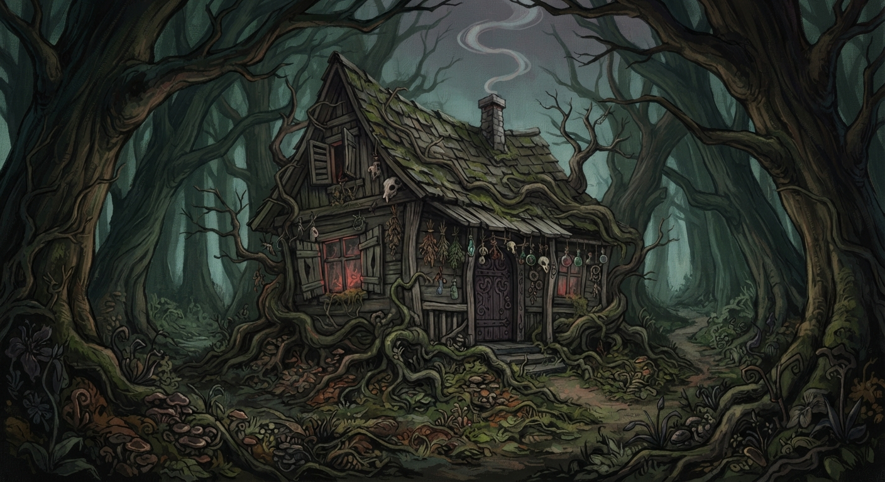
Un suono improvviso rompe il silenzio della foresta. Una risata forte e sgraziata si leva tra gli alberi, seguita da un'altra proveniente da una direzione diversa. Poi una terza, più lontana, sembra rispondere alle prime due. Le risate si rincorrono tra i tronchi, ora vicine, ora distanti, senza che riusciate a individuare con precisione da dove provengano. Sono risate femminili, acute e inquietanti, che si mescolano al fruscio delle foglie. Dopo qualche istante, le risate si interrompono. Il silenzio che segue viene spezzato da un lieve scricchiolio proveniente dalla vegetazione alla vostra sinistra. Poco dopo, alcuni rami si muovono sul lato opposto della radura, come se qualcuno stesse attraversando lentamente il sottobosco. Dalla vecchia abitazione giunge un cigolio: la porta d'ingresso si è socchiusa, lasciando filtrare una luce rossastra più intensa. Le risate riprendono, questa volta più basse e sommesse. Tra gli alberi, ai margini della radura, iniziate a distinguere alcune sagome che si muovono lentamente. Non si avvicinano subito, ma sembrano osservarvi, spostandosi da un tronco all'altro. Una delle figure si ferma accanto alla casa, un'altra emerge poco distante, mentre la terza rimane ancora nascosta tra la vegetazione. Poi una voce gracchiante si leva dalla penombra, seguita da una risata sguaiata. Le tre figure avanzano lentamente verso di voi, senza più preoccuparsi di nascondersi. I loro movimenti sono innaturali e i loro volti si deformano in sorrisi sinistri.
Le megere non hanno particolare interesse a combattere fino alla morte per difendere la propria abitazione. Preferiscono confondere, indebolire e disorientare gli avversari, sfruttando le proprie capacità e l'ambiente circostante. Durante lo scontro possono alternare attacchi diretti, incantesimi e manovre ingannevoli, cercando di separare i personaggi e metterli in difficoltà. Possono agire d'istinto, provocare gli avversari, deriderli e approfittare di qualsiasi occasione per destabilizzarli. Il loro obiettivo è mantenere il controllo della situazione e allontanare gli intrusi, non affrontare uno scontro all'ultimo sangue.
Capacità e incantesimi suggeriti
Per caratterizzare le megere, il Master può utilizzare le seguenti capacità, adattandole alle possibilità offerte dal sistema di gioco:
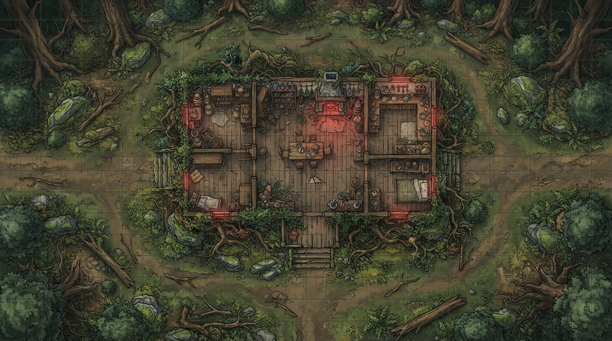
Mappa combattimento
Esiti dello scontro
Questi esiti rappresentano possibili sviluppi dello scontro, non risultati prestabiliti. Il Master deve lasciare che siano le decisioni dei personaggi, le capacità utilizzate e il risultato delle prove a determinarne l'andamento.
Il silenzio torna lentamente ad avvolgere la dimora. La casa è ancora in piedi, ma al suo interno tutto sembra essere stato lasciato in fretta. Pentole rovesciate, scaffali disordinati, erbe essiccate sparse sul pavimento e piccoli oggetti di dubbia provenienza riempiono le stanze. L'odore acre che aveva impregnato l'ambiente durante lo scontro è ancora presente, ma sotto di esso riuscite a distinguere qualcosa di diverso: un profumo dolce, quasi floreale, che sembra provenire da una delle stanze. L'abitazione appare modesta e trascurata, eppure alcuni particolari suggeriscono che non sia soltanto il rifugio di tre vecchie donne. Alle pareti sono appesi disegni infantili, alcuni realizzati con colori vivaci, altri scarabocchiati su fogli ingialliti. Sugli scaffali si accumulano libri dalla copertina consunta, recipienti pieni di sostanze sconosciute e piccoli oggetti che sembrano appartenere a bambini: giocattoli di legno, nastri, biglie e bambole. In un angolo notate un tavolo ingombro di carte, appunti e ampolle. Poco distante, vicino a una finestra, si trova un tavolino più piccolo, sul quale giace un foglio ingiallito dal tempo. La carta è fragile e presenta i bordi strappati. Sembra una pagina appartenuta a un'antica fiaba per bambini.
L'abitazione contiene diversi oggetti che i personaggi possono esaminare liberamente. Alcuni servono semplicemente a rendere la casa più vissuta e inquietante, mentre altri possono fornire informazioni utili sull'attività delle megere:
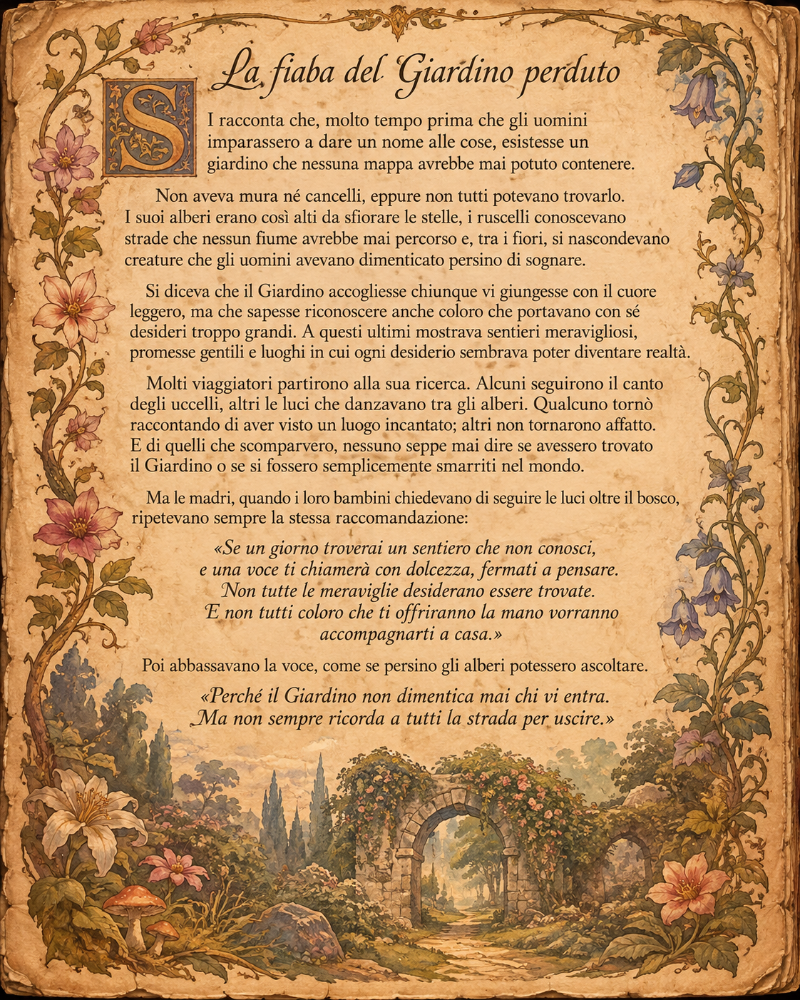
sul tavolino vicino alla finestra si trova una pagina strappata da un'antica fiaba per bambini. La carta è ingiallita e fragile, ma il testo è ancora in gran parte leggibile. Racconta di un giardino nascosto, irraggiungibile attraverso le strade conosciute, nel quale crescono fiori enormi, gli alberi sembrano toccare il cielo e le luci non si spengono mai. Con una prova di arcana, o simili in base al sistema utilizzato, i personaggi potranno capire che si tratta di una pergamena magicaSe uno dei personaggi legge la fiaba ad alta voce, al termine della lettura si attiva un incantesimo nascosto tra i versi. Un profumo dolce e floreale invade la stanza e, in pochi istanti, tutti i personaggi presenti cadono in un sonno profondo, senza possibilità di resistere o contrastare la magia. Il sonno li conduce direttamente nel ➞ ATTO II - Il Giardino di Auralis
La sensazione di cadere nel vuoto svanisce lentamente, lasciando spazio a una piacevole brezza che vi accarezza il viso. Quando riaprite gli occhi, vi ritrovate distesi su un morbido letto d'erba, circondati da una distesa sconfinata di prati e colline ondulate. Sopra di voi si estende un cielo limpido, attraversato da nuvole chiare che si muovono lentamente. La luce è calda e avvolgente, simile a quella di una limpida giornata primaverile. L'aria è fresca e profumata, carica di odori floreali che cambiano a ogni soffio di vento. Intorno a voi si estendono prati rigogliosi, punteggiati da fiori selvatici dalle dimensioni insolite. Alcuni sono alti quanto piccoli alberi, altri presentano calici così grandi da poter offrire riparo a più persone. I loro colori si mescolano in un mosaico vivace di gialli, viola, azzurri e rossi, mentre l'erba ondeggia dolcemente sotto il vento. Qua e là si scorgono alberi monumentali, isolati o riuniti in piccoli boschetti, le cui chiome si stagliano sopra il paesaggio. Dietro di voi si erge un antico arco di pietra. La sua struttura è leggermente inclinata, consumata dal tempo e parzialmente ricoperta da muschio e vegetazione. Sembra sul punto di cedere, eppure rimane immobile, come se fosse rimasto lì per secoli. Oltrepassandolo con lo sguardo, non riuscite a distinguere alcuna traccia del luogo da cui siete arrivati.
Il paesaggio è silenzioso, ma non deserto. Tra i fiori si intravedono piccoli movimenti, mentre sopra le corolle più alte svolazzano minuscole figure alate. In lontananza, vicino a uno specchio d'acqua, qualcosa sembra muoversi tra la vegetazione. Tutto ciò che vi circonda trasmette una sensazione di pace e meraviglia. Eppure, c'è qualcosa in questo luogo che sfugge alla vostra comprensione. Non sapete dove vi troviate, né quanto tempo sia passato dal vostro ultimo ricordo. Una cosa, però, è certa: non siete più nel mondo che conoscete.
Benvenuti nel Giardino di Auralis.
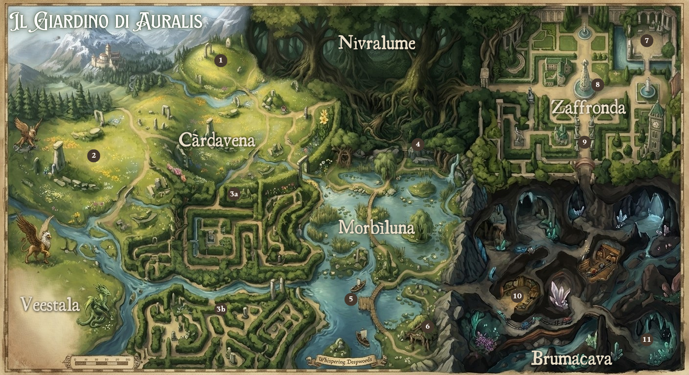
Giardino di Auralis
Passa il cursore sui numeri della mappa per scoprire i nomi dei luoghi.
La mappa riportata rappresenta l'intero Giardino di Auralis e mostra la disposizione delle diverse regioni, insieme ai principali luoghi d'interesse. Ogni luogo è contrassegnato da un numero, che permette di individuarlo facilmente sulla mappa e di ritrovare la relativa descrizione all'interno del capitolo dedicato alla regione di appartenenza. Le informazioni contenute in questa sezione hanno carattere generale. Per descrizioni ambientali, abitanti, incontri, prove, eventuali pericoli e dettagli specifici di ciascun luogo, il Master dovrà fare riferimento alle rispettive [Nota Master] presenti nei capitoli delle singole regioni.
⚠️ IMPORTANTE La regione di Veestala e Labirinto di Elara - 3b non sono inizialmente visibili e accessibili ai personaggi. Potranno essere raggiunte soltanto dopo aver completato le rispettive quest necessarie a sbloccarle.
Natura e caratteristiche
Il Giardino di Auralis è un antico piano dimensionale fatato, separato dal mondo conosciuto e caratterizzato da leggi naturali e magiche proprie. Possiede una sorta di volontà istintiva e primordiale, che si manifesta attraverso la sua stessa natura. Non si tratta di una coscienza vera e propria, capace di ragionare o prendere decisioni, ma di una forza intrinseca al piano dimensionale, che ne caratterizza il funzionamento e contribuisce a mantenerne gli equilibri. Una delle sue peculiarità riguarda il trascorrere del tempo: un giorno trascorso nel Giardino equivale a tre mesi nel mondo esterno. Questa differenza è costante e vale in entrambe le direzioni. Il Master dovrà tenerne conto quando i personaggi riusciranno a fare ritorno, valutando le conseguenze che la loro assenza potrebbe aver avuto sulle persone e sugli eventi lasciati nel mondo reale.
Il Giardino e le sue regioni
Il Giardino di Auralis è suddiviso in regioni molto diverse tra loro, ognuna caratterizzata da un ambiente, un ecosistema e forme di vita peculiari. Le regioni sono collegate da passaggi naturali e percorsi riconoscibili, che attraversano paesaggi anche molto differenti. Non esiste un'autorità che governi, né un sistema politico centralizzato. Ogni regione possiede caratteristiche, abitanti e consuetudini proprie, che ne determinano il funzionamento e gli equilibri interni. Le diverse aree mantengono una sostanziale autonomia e i loro abitanti tendono a occuparsi soprattutto delle questioni che riguardano il proprio territorio. Possono conoscere l'esistenza delle regioni vicine, intrattenere rapporti occasionali e spostarsi da un'area all'altra, ma generalmente non sentono il bisogno di farlo e non intervengono nelle vicende altrui. Questa indipendenza è favorita anche da un equilibrio magico naturale, una proprietà intrinseca del piano dimensionale che contribuisce a mantenere ogni regione nella propria condizione, limitando interferenze e alterazioni eccessive. Non si tratta di un sistema di controllo imposto da un'autorità, ma di una caratteristica fondamentale del Giardino stesso.
Esplorazione e spostamenti
Il Giardino di Auralis è pensato per essere esplorato liberamente. I personaggi possono soffermarsi nei luoghi che attirano la loro attenzione e decidere autonomamente quale percorso seguire. I collegamenti indicati sulla mappa rappresentano i principali percorsi tra le regioni e i luoghi d'interesse. Non è tuttavia possibile abbandonare liberamente una regione in qualsiasi direzione: ciascuna presenta confini e particolari condizioni che impediscono di raggiungere le aree circostanti al di fuori dei passaggi previsti. Le modalità specifiche con cui questi limiti si manifestano sono descritte nelle note dedicate alle singole regioni.
Le distanze e i tempi di percorrenza possono essere gestiti liberamente dal Master, in base al sistema utilizzato e al ritmo della sessione. Non è necessario calcolare ogni singolo spostamento, a meno che la situazione non lo richieda. Durante il viaggio è possibile introdurre incontri con gli abitanti, creature selvatiche, piccoli eventi ambientali o situazioni che permettano ai personaggi di conoscere meglio il luogo in cui si trovano.
Abitanti e creature
Le diverse regioni sono ambienti abitati da creature e comunità che seguono le proprie abitudini. La maggior parte degli abitanti è originaria del Giardino di Auralis e, nella maggior parte dei casi, vi conducono la propria esistenza senza particolare interesse per il mondo esterno. Non tutte le creature incontrate sono ostili e non tutte le situazioni devono essere risolte attraverso il combattimento. Alcuni abitanti possono essere amichevoli e disponibili, altri diffidenti, schivi o interessati a ottenere qualcosa dai personaggi. Il loro comportamento dipende dalla natura, dalle abitudini e dalle caratteristiche di ciascuna regione. È importante che ogni regione mantenga una propria identità, così che il passaggio da un ambiente all'altro rappresenti anche un cambiamento nell'atmosfera e nelle esperienze dei personaggi.
Il rapporto con gli estranei
I personaggi provengono da un piano di esistenza diverso dal Giardino di Auralis e, in quanto tali, rappresentano presenze estranee al suo ecosistema originario. Gli abitanti sono in grado di percepire questa diversità attraverso sensazioni e caratteristiche che appartengono alla loro natura, come particolari variazioni dell'aura o dell'odore.
Il ritorno al mondo esterno
Il Giardino di Auralis non è un luogo dal quale sia possibile uscire semplicemente ripercorrendo il percorso seguito per arrivare.
Per uscire dal luogo è necessario raggiungere Veestalia - La Costa della Sabbia Dorata, la regione che custodisce il portale verso il loro piano originario.
Esistono tre possibilità per arrivarci, ciascuna legata a un diverso percorso dell'avventura:
Informazioni riservate al Master
Il Giardino di Auralis nasconde una storia e una natura che i personaggi non conoscono ancora. Le informazioni relative a Dalia, alla sua origine, a Fernadolus, alla creazione del Labirinto e alle forze che proteggono il luogo sono destinate esclusivamente al Master. Non è necessario rivelare subito questi elementi. La loro scoperta dovrebbe avvenire gradualmente, attraverso gli incontri, gli indizi e le esperienze dei personaggi. Il Master troverà i dettagli relativi alla storia del Giardino e ai suoi segreti nelle sezioni dedicate, insieme alle indicazioni per gestire gli eventuali sviluppi della storia.
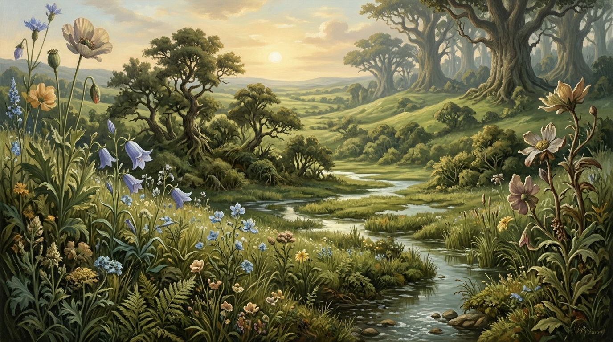
Lasciandovi alle spalle l'Arco Inclinato, vi ritrovate davanti a un paesaggio sconfinato di prati e colline ondulate. L'erba alta si muove dolcemente sotto il vento, mentre fiori selvatici dalle dimensioni insolite colorano le praterie. Alcuni sono alti quanto piccoli alberi, altri presentano calici così grandi da poter offrire riparo a più persone. Qua e là si scorgono ruscelli dalle acque limpide, piccoli boschetti e alberi monumentali che si stagliano sopra la vegetazione.
Osservando il territorio, riuscite a distinguere tre direzioni principali. Davanti a voi, oltre una distesa di prati e alcune colline, si estende una fitta foresta. Gli alberi sono così numerosi e ravvicinati da formare una parete verde scura, mentre le loro chiome si intrecciano fino a nascondere gran parte del cielo. Un sentiero naturale attraversa le praterie e sembra condurre proprio verso quel bosco.
Alla vostra destra, su una collina poco distante, notate invece una distesa di fiori dai lunghi steli e dalle corolle pendenti. Quando il vento li attraversa, i fiori oscillano delicatamente e producono un lieve tintinnio, simile a quello di piccoli campanelli.
Più in basso rispetto, una stradina stretta si snoda tra l'erba e scende lungo il pendio. Il percorso è appena visibile, ma sembra ben tracciato rispetto al resto della prateria. Seguendolo con lo sguardo, riuscite a scorgere in lontananza alcune strutture vegetali e passaggi che si intrecciano tra loro, come se conducessero a un intricato labirinto.
Intorno a voi, la prateria continua a distendersi in ogni direzione. Tra i fiori più alti si intravedono piccoli movimenti e, sopra le corolle, minuscole figure alate svolazzano da un fiore all'altro. Vicino a uno dei ruscelli, qualcosa si muove rapidamente tra la vegetazione, scomparendo poco dopo alla vista. Non sapete cosa vi attenda lungo questi percorsi, ma ciascuno sembra condurre verso una parte diversa di questo luogo sconosciuto. La scelta di dove dirigervi spetta a voi.
E' la prima regione del Giardino di Auralis che gli avventurieri esplorano dopo essersi risvegliati ai piedi dell'1 - Arco Inclinato. Si presenta come un territorio ampio e rigoglioso, caratterizzato da praterie, colline ondulate, fiori dalle dimensioni insolite, piccoli corsi d'acqua e alberi monumentali. È una zona relativamente tranquilla, nella quale i personaggi possono iniziare a familiarizzare con la natura straordinaria del Giardino e con le sue particolarità.
Abitanti e creature


Regole e particolarità della regione
Presenta confini naturali che impediscono agli avventurieri di abbandonare liberamente la regione seguendo direzioni diverse dai percorsi che conducono alle altre aree del Giardino. Se i personaggi tentano di allontanarsi dalla regione attraverso una direzione non prevista, si accorgeranno gradualmente che il paesaggio sembra non cambiare mai. Davanti a loro, le praterie continuano a estendersi verso l'orizzonte, mentre alle loro spalle rimane visibile il panorama di una vasta vallata con una fortezza in lontananza. Anche procedendo per lunghi tratti, il paesaggio sembra rimanere sempre alla stessa distanza. L'effetto è quello di un movimento senza reale avanzamento. Gli avventurieri possono avere la sensazione di percorrere grandi distanze, ma non riescono mai ad avvicinarsi all'orizzonte né a raggiungere i confini della regione. Il fenomeno non è accompagnato da barriere visibili, muri o ostacoli fisici, ma è il territorio stesso a impedire loro di proseguire oltre i limiti stabiliti.
Esplorazione e incontri
Durante l'esplorazione, il Master può introdurre incontri con gli abitanti, creature selvatiche, piccoli eventi ambientali o situazioni inaspettate, mantenendo un'atmosfera generalmente serena e meravigliosa, ma senza escludere momenti di sorpresa o inquietudine. Le Fate e i Satiri possono essere utilizzati per offrire occasioni di interazione, raccontare curiosità sul territorio o fornire indicazioni utili ai personaggi. Non è necessario che ogni incontro abbia uno scopo preciso: alcuni possono semplicemente contribuire a rendere Càrdavena un luogo vivo e popolato.
Collegamenti e sviluppi dell'avventura
Càrdavena è collegata alle regioni circostanti attraverso percorsi riconoscibili. Proseguendo lungo i sentieri indicati sulla mappa, gli avventurieri possono raggiungere Nivralume – Il Bosco delle Radici Sospese. La regione Veestalia e 3b - Il Labirinto di Dalia non sono visibile dalla costa, che mostrerà un mare aperto infinito.
 L'antico arco di pietra si erge solitario tra l'erba alta, leggermente inclinato su un lato. La superficie è consumata dal tempo e presenta numerose crepe, mentre muschio, rampicanti e piccole piante selvatiche si insinuano tra le pietre. Non presenta porte, cancelli o decorazioni particolarmente elaborate: è una struttura semplice, ormai in parte inglobata dalla vegetazione. Osservandolo da vicino, notate che la sua apertura non incornicia alcun passaggio riconoscibile. Guardando oltre, infatti, non riuscite a scorgere nulla del luogo da cui siete arrivati, né una traccia della casa delle tre donne. Da questa parte, l'arco sembra affacciarsi soltanto sulle immense praterie di Càrdavena. Nonostante l'aspetto fragile e il cedimento apparente della struttura, le pietre sono sorprendentemente stabili. L'arco non sembra destinato a crollare, come se qualcosa lo mantenesse in piedi nonostante il trascorrere dei secoli.
L'antico arco di pietra si erge solitario tra l'erba alta, leggermente inclinato su un lato. La superficie è consumata dal tempo e presenta numerose crepe, mentre muschio, rampicanti e piccole piante selvatiche si insinuano tra le pietre. Non presenta porte, cancelli o decorazioni particolarmente elaborate: è una struttura semplice, ormai in parte inglobata dalla vegetazione. Osservandolo da vicino, notate che la sua apertura non incornicia alcun passaggio riconoscibile. Guardando oltre, infatti, non riuscite a scorgere nulla del luogo da cui siete arrivati, né una traccia della casa delle tre donne. Da questa parte, l'arco sembra affacciarsi soltanto sulle immense praterie di Càrdavena. Nonostante l'aspetto fragile e il cedimento apparente della struttura, le pietre sono sorprendentemente stabili. L'arco non sembra destinato a crollare, come se qualcosa lo mantenesse in piedi nonostante il trascorrere dei secoli.
 Una collina dolcemente ondulata si estende a perdita d'occhio, ricoperta da migliaia di fiori pendenti, simili a piccoli campanelli. I loro petali, dalle tonalità del bianco, del giallo e del lilla, oscillano al minimo soffio di vento, producendo un tintinnio delicato e continuo. Nell'aria si diffonde un dolce profumo floreale, che accompagna ogni passo lungo la collina. Alle vostre spalle, un'ombra imponente si proietta improvvisamente sul terreno. Quando vi voltate, scorgete sulla sommità della collina una creatura alata dalle dimensioni considerevoli. Ha quattro zampe robuste, un corpo possente e una testa che ricorda quella di un gufo. Il suo piumaggio bruno si confonde con i colori della terra e delle erbe circostanti. La creatura vi osserva attentamente. Non muove il becco, eppure una voce risuona nella vostra mente, profonda e pacata, con una lieve risonanza che sembra provenire da molto lontano. Le parole si mescolano al fruscio dell'erba e al tintinnio dei fiori, come se fosse il vento stesso a parlare attraverso di essa.
Una collina dolcemente ondulata si estende a perdita d'occhio, ricoperta da migliaia di fiori pendenti, simili a piccoli campanelli. I loro petali, dalle tonalità del bianco, del giallo e del lilla, oscillano al minimo soffio di vento, producendo un tintinnio delicato e continuo. Nell'aria si diffonde un dolce profumo floreale, che accompagna ogni passo lungo la collina. Alle vostre spalle, un'ombra imponente si proietta improvvisamente sul terreno. Quando vi voltate, scorgete sulla sommità della collina una creatura alata dalle dimensioni considerevoli. Ha quattro zampe robuste, un corpo possente e una testa che ricorda quella di un gufo. Il suo piumaggio bruno si confonde con i colori della terra e delle erbe circostanti. La creatura vi osserva attentamente. Non muove il becco, eppure una voce risuona nella vostra mente, profonda e pacata, con una lieve risonanza che sembra provenire da molto lontano. Le parole si mescolano al fruscio dell'erba e al tintinnio dei fiori, come se fosse il vento stesso a parlare attraverso di essa.
“Perché siete venuti qui? E cosa sperate di trovare al suo interno?”
Rimane immobile, con lo sguardo rivolto verso di voi, in attesa di una risposta. Le sue grandi ali si muovono lentamente, sollevando appena i fiori intorno a sé. Non sembra minacciosa, ma il suo atteggiamento lascia intendere che non abbia intenzione di ignorare la vostra presenza.
La creatura, Nomarium, è uno dei guardiani del Giardino di Auralis e ha il compito di sorvegliare la Distesa dei Campanelli e accogliere coloro che vi giungono. Non cerca una risposta giusta e non pretende nobili intenzioni. Vuole soltanto ascoltare la verità. I personaggi possono avere obiettivi egoistici, ambizioni personali o motivazioni poco nobili: ciò che conta è che non cerchino di nasconderli dietro parole ingannevoli. Durante le risposte, i campanelli reagiscono alle eventuali menzogne. Se un personaggio mente deliberatamente, i fiori intorno a lui iniziano a tintinnare, attirando l'attenzione del guardiano. La prova non si considera necessariamente fallita al primo rintocco: la creatura concede ai visitatori la possibilità di correggersi e parlare con sincerità. Tuttavia, se il gruppo insiste nell'inganno o cerca deliberatamente di raggirarlo, la creatura perde fiducia nei suoi confronti e interrompe il colloquio.
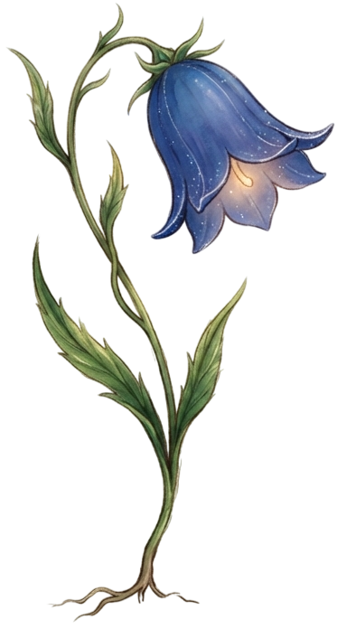
 Seguendo la stradina che scende lungo il pendio, vi allontanate progressivamente dalle distese erbose di Càrdavena. Il sentiero attraversa una zona in cui la vegetazione diventa sempre più fitta,
fino a condurvi davanti a una vasta struttura di alte siepi, disposte in file ordinate che si estendono ben oltre ciò che riuscite a vedere.
Davanti a voi si apre un ingresso privo di cancelli o barriere, delimitato da due imponenti pareti di vegetazione. Oltre la soglia si intravedono sentieri curati, piccoli fiori dai colori vivaci e
siepi intrecciate con una precisione quasi innaturale. A prima vista, il luogo ha l'aspetto di un giardino fiabesco, tranquillo e accogliente, come se fosse stato creato per offrire ai più piccoli
uno spazio in cui giocare e perdersi tra i suoi percorsi.
Seguendo la stradina che scende lungo il pendio, vi allontanate progressivamente dalle distese erbose di Càrdavena. Il sentiero attraversa una zona in cui la vegetazione diventa sempre più fitta,
fino a condurvi davanti a una vasta struttura di alte siepi, disposte in file ordinate che si estendono ben oltre ciò che riuscite a vedere.
Davanti a voi si apre un ingresso privo di cancelli o barriere, delimitato da due imponenti pareti di vegetazione. Oltre la soglia si intravedono sentieri curati, piccoli fiori dai colori vivaci e
siepi intrecciate con una precisione quasi innaturale. A prima vista, il luogo ha l'aspetto di un giardino fiabesco, tranquillo e accogliente, come se fosse stato creato per offrire ai più piccoli
uno spazio in cui giocare e perdersi tra i suoi percorsi.
Non appena attraversate l'ingresso, tuttavia, qualcosa cambia. I colori iniziano lentamente a perdere intensità, i fiori si afflosciano e le foglie assumono tonalità più scure. Le siepi, un tempo ordinate e rigogliose, sembrano deformarsi sotto i vostri occhi: i rami si intrecciano, le spine si allungano e la vegetazione diventa sempre più fitta. Anche i sentieri mutano aspetto, restringendosi e piegando in direzioni che prima non sembravano esistere.
Voltandovi, vi accorgete che anche il passaggio da cui siete entrati appare diverso. Le pareti vegetali si sono richiuse alle vostre spalle, lasciando soltanto un intricato intreccio di rami e rovi. Davanti a voi si estende ora un labirinto cupo e angusto, dove la vegetazione sembra voler nascondere ogni possibile via d'uscita. Il silenzio è rotto soltanto dal fruscio delle foglie e dal rumore dei vostri passi sul terreno ricoperto di radici e rami secchi.
Esplorazione
Una volta entrati, i personaggi possono esplorare liberamente i suoi corridoi, scegliendo di volta in volta la direzione da prendere. Sarà il Master a descrivere i percorsi,
gli incroci e gli eventuali punti di riferimento che i personaggi incontreranno durante l'esplorazione.
“Qui giace il Guardiano e Protettore del labirinto di Dalia. Tra tutti si distinse per il suo coraggio e per il sacrificio della propria vita, offerta per salvare quella di Dalia. Che la sua lama riposi, ma che la sua promessa non venga dimenticata”
Fernadolus Glomatuh
“Tutti lo possono aprire, ma nessuno lo sa chiudere. Cosa?”
(Risposta: l'uovo)
Una volta pronunciata la risposta corretta, ciò che si scorge attraverso il portale cambia. Il mare scompare, lasciando il posto a un ampio fiume che separa le due sponde. Al di là dell'acqua si intravede una nuova parte del Labirinto, mentre un antico ponte di pietra offre un passaggio per raggiungerla. Attraversando il portale, i personaggi raggiungono 3b - Il Labirinto di Dalia Attraversando il portale, vi ritrovate dall'altra parte del fiume, in una zona del Labirinto che non avevate mai visto prima. Alle vostre spalle, l'arco di pietra si staglia tra la vegetazione, ma oltre la sua apertura non riuscite più a scorgere il mare. Davanti a voi si estende un nuovo intreccio di sentieri, circondato da alte siepi e alberi dalle chiome fitte. Questa parte del Labirinto appare diversa da quella che avete appena attraversato. La vegetazione è più rigogliosa e, tra le siepi, si intravedono alberi antichi, radici che affiorano dal terreno e frammenti di antiche strutture in pietra, ormai ricoperti dal muschio e dai rampicanti. L'aria è più silenziosa, quasi immobile. Eppure, mentre vi addentrate nei sentieri, vi sembra di percepire qualcosa in lontananza: un indistinto vociare, che si perde e riemerge tra le pareti vegetali.
Attraversando il portale, vi ritrovate dall'altra parte del fiume, in una zona del Labirinto che non avevate mai visto prima. Alle vostre spalle, l'arco di pietra si staglia tra la vegetazione, ma oltre la sua apertura non riuscite più a scorgere il mare. Davanti a voi si estende un nuovo intreccio di sentieri, circondato da alte siepi e alberi dalle chiome fitte. Questa parte del Labirinto appare diversa da quella che avete appena attraversato. La vegetazione è più rigogliosa e, tra le siepi, si intravedono alberi antichi, radici che affiorano dal terreno e frammenti di antiche strutture in pietra, ormai ricoperti dal muschio e dai rampicanti. L'aria è più silenziosa, quasi immobile. Eppure, mentre vi addentrate nei sentieri, vi sembra di percepire qualcosa in lontananza: un indistinto vociare, che si perde e riemerge tra le pareti vegetali.
Esplorazione
Una volta attraversato il portale, i personaggi raggiungono la seconda sezione del labirinto. Anche qui possono esplorare liberamente i percorsi, scegliendo di volta in volta la direzione da prendere. Sarà il Master a descrivere i sentieri, gli incroci e gli elementi che incontreranno lungo il cammino. Questa parte presenta una vegetazione più rigogliosa e custodisce i resti di antiche strutture in pietra, ormai riconquistate dalla natura.
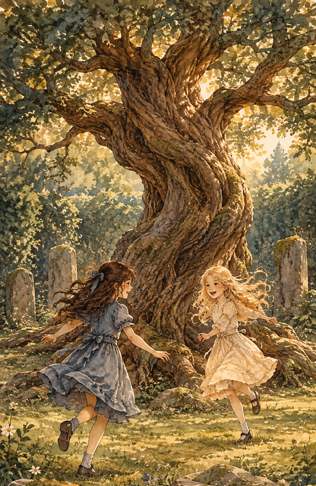
Nascosta tra gli intricati passaggi della seconda parte del Labirinto, si trova una radura circolare, separata dal resto del giardino da alte pareti di vegetazione. Al suo centro cresce un albero gigantesco, antico e imponente. Il tronco, largo e contorto, presenta una corteccia segnata dal tempo, mentre le sue radici si estendono in ogni direzione, insinuandosi sotto le mura e le pavimentazioni circostanti. Attorno all'albero si trovano alcune pietre disposte in cerchio, forse ciò che rimane di un antico spazio rituale o di un luogo destinato al raccoglimento. La vegetazione è particolarmente rigogliosa, ma appare insolitamente ordinata nei pressi del tronco, come se la natura stessa rispettasse quel luogo. La luce filtra dolcemente attraverso l'ampia chioma dell'albero, illuminando la radura e creando un'atmosfera di quiete quasi irreale. Qui il Labirinto sembra smettere di essere un intrico senza fine, lasciando spazio a un luogo appartato e silenzioso.Il Segreto di Dalia
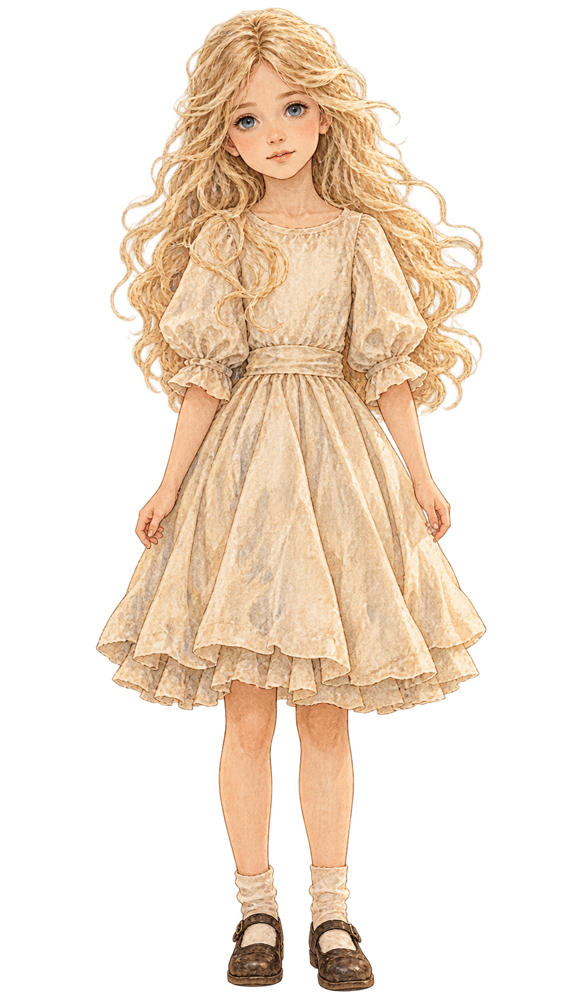
Dalia è una bambina dotata di un potere straordinario, figlia di una divinità che l'ha generata. Quando una minaccia mise in pericolo la sua esistenza, la madre divina decise di proteggerla nascondendol all'interno del Giardino di Auralis. Fu la divinità stessa a creare il labirinto,separandolo dal resto del Giardino e trasformandolo in un rifugio inaccessibile a chiunque potesse cercare la bambina.A vegliare su Dalia fu incaricato Fernadolus Glomatuh, un antico guardiano e protettore del labirinto. Il suo compito era impedire che la bambina venisse raggiunta da chiunque potesse minacciarla. Quando il pericolo arrivò, Fernadolus sacrificò la propria vita per salvarla. La statua eretta in suo onore conserva ancora oggi il ricordo del suo gesto. Prima di morire, predispose anche una possibile via di fuga, nel caso in cui un giorno fosse stato necessario abbandonare il labirinto. Dalia conosce il percorso che conduce a questo passaggio segreto, ma non può aprirlo da sola: per accedervi è necessaria una particolare chiave, la Chiave Difettosa, che Fernadolus nascose all'interno del Portale delle Meraviglie, nella 11 - Galleria dei Frammenti.
Gli avventurieri potranno quindi scoprire l'esistenza di questa via d'uscita soltanto parlando con Dalia e dovranno recuperare la chiave prima di poterla utilizzare. Una volta ottenuta, Dalia sarà in grado di guidarli attraverso il percorso nascosto, permettendo loro di lasciare il Giardino di Auralis. Il corpo di Dalia , ormai scomparso, non esiste più. Ciò che è custodito nel cuore del labirinto è soltanto la sua anima, preservata dalla protezione divina. Nonostante la sua natura, Dalia non è consapevole di essere un'anima priva di corpo. Si comporta e pensa come una bambina normale, convinta che il mondo che conosce sia l'unico esistente. Le sue conoscenze derivano principalmente dai racconti di Fernadolus e da ciò che ha potuto osservare nel labirinto. Dalia, se dovesse decidere di andarsene, la sua anima potrebbe lasciare il luogo in cui è custodita e reincarnarsi in un'altra persona.
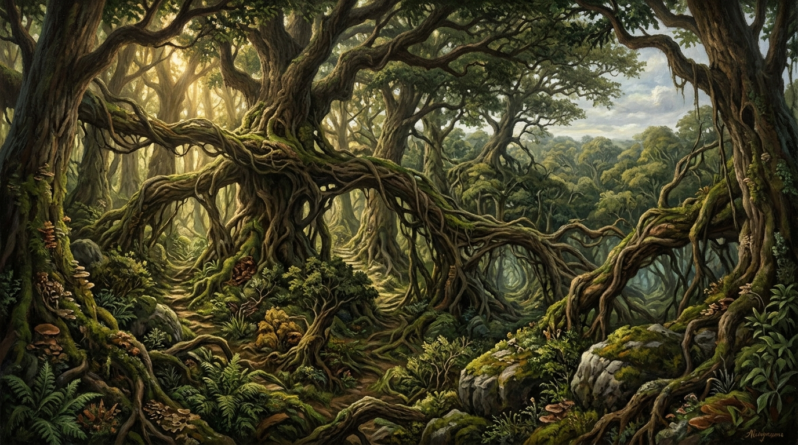
Davanti a voi si estende una foresta antichissima. Gli alberi sono enormi, con tronchi così imponenti da sembrare colonne naturali e chiome che si intrecciano molto al di sopra delle vostre teste. Le loro radici, però, non si limitano ad affondare nel terreno: alcune emergono dalla terra, si sollevano e si intrecciano tra loro, formando ponti, archi, scale e gallerie sospese. In alcuni punti, la vegetazione è talmente fitta che diventa difficile distinguere il terreno dalle strutture naturali che si innalzano tutt'intorno. Le radici si arrampicano sui tronchi, attraversano gli spazi tra gli alberi e si perdono tra le fronde, creando una sorta di seconda foresta sospesa sopra quella che ricopre il suolo. La luce filtra attraverso le chiome in sottili fasci, illuminando il muschio e le felci che ricoprono il terreno. Piccoli bagliori si muovono tra i tronchi, scomparendo dietro le radici prima che riusciate a distinguerne la natura.
Il bosco è silenzioso, ma non sembra deserto. Qua e là si avvertono scricchiolii profondi, fruscii tra le foglie e movimenti appena percettibili. Ogni tanto, un ramo si sposta lentamente, oppure una radice sembra contrarsi sotto il terreno, come se l'intera foresta fosse attraversata da un respiro lento e regolare. Non esiste un sentiero chiaramente tracciato. Per avanzare dovrete orientarvi tra gli alberi, seguire i passaggi lasciati liberi dalla vegetazione e trovare il modo di superare gli ostacoli naturali che interrompono il cammino. Più vi addentrate nella foresta, più avete la sensazione di essere osservati. Nivralume sembra custodire qualcosa nelle sue profondità, qualcosa che non accoglie con leggerezza la presenza degli estranei.
Nivralume è una foresta antica e rigogliosa, caratterizzata da enormi alberi e radici monumentali che si sviluppano in ogni direzione, intrecciandosi tra i tronchi, emergendo dal terreno e formando passaggi naturali e ostacoli lungo il percorso. La foresta costituisce un ambiente vivo e profondamente legato alle proprie creature e alla vegetazione che la popola. Gli avventurieri dovranno dimostrare attenzione e rispetto nei confronti di questo ecosistema prima di poter proseguire verso le zone più nascoste del bosco.
Abitanti e creature

Regole e particolarità della regione
L'attraversamento di Nivralume prevede tre ostacoli naturali che i personaggi dovranno superare prima di raggiungere la radura sorvegliata dai Custodi del Bosco. Le prove possono essere adattate al sistema utilizzato, scegliendo le abilità più appropriate e modificando il livello di difficoltà in base alle caratteristiche del gruppo.
Il primo ostacolo è il Ponte delle Radici, un intreccio di grosse radici sospese che collega le due sponde di una profonda fenditura nel terreno. Il passaggio è stretto e irregolare e oscilla leggermente sotto il peso di chi lo attraversa. I personaggi possono ricorrere a prove di Atletica o Acrobazia per mantenere l'equilibrio e raggiungere l'altra sponda, oppure utilizzare la Forza per aggrapparsi alle radici e aiutare i compagni durante il passaggio. In caso di fallimento, un personaggio perde l'equilibrio e rimane appeso nel vuoto, costringendo gli altri a intervenire per aiutarlo a risalire.
Il secondo ostacolo è la Parete delle Radici, un'enorme massa di radici intrecciate che sbarra completamente il sentiero. Alcune formano appigli naturali che permettono di arrampicarsi, mentre altre sono troppo spesse e ingombranti per essere spostate facilmente. I personaggi possono utilizzare l'Atletica per raggiungere la sommità della barriera arrampicandosi lungo le radici, oppure la Forza per sollevare e spostare quelle più ingombranti, cercando di aprire un varco. In caso di fallimento, le radici cedono o si richiudono durante il tentativo, facendo perdere tempo ai personaggi e costringendoli a cercare un altro punto da cui superare la barriera.
Il terzo ostacolo è il Tronco del Guardiano, un gigantesco albero caduto che blocca completamente il passaggio. Le sue radici sono ancora vive e saldamente ancorate al terreno, mentre alcuni rami si sono intrecciati con gli alberi circostanti, rendendo difficile spostarlo. Per superarlo, i personaggi possono ricorrere alla Forza per sollevare o spostare il tronco, oppure all'Atletica per arrampicarsi e raggiungere l'altro lato passando dall'alto.
Gli ostacoli non devono necessariamente essere affrontati tutti nello stesso modo. Il Master può lasciare spazio a soluzioni alternative proposte dai giocatori, purché siano coerenti con l'ambiente e con le capacità dei personaggi.
Esplorazione e incontri
Durante l'attraversamento, il Master può descrivere una foresta particolarmente fitta, nella quale le radici emergono continuamente dal terreno e gli alberi sembrano quasi intrecciarsi tra loro. È possibile introdurre piccoli eventi ambientali o incontri con creature selvatiche, purché coerenti con la natura di Nivralume.È importante valorizzare il comportamento dei personaggi durante l'esplorazione: il modo in cui affrontano gli ostacoli, il rispetto dimostrato verso la vegetazione e le eventuali azioni compiute per danneggiare o preservare la foresta avranno un ruolo determinante nel successivo incontro con i Custodi del Bosco.
Collegamenti e sviluppi dell'avventura
Dopo aver superato i tre ostacoli, i personaggi raggiungono una piccola radura circondata da alberi monumentali, dove incontrano i Custodi del Bosco. Questi intimano agli avventurieri di fermarsi e vogliono comprenderne e valutano il loro comportamento durante l'attraversamento della foresta. Il loro giudizio dipende principalmente dal modo in cui i personaggi hanno affrontato le prove: se hanno cercato di superare gli ostacoli rispettando la vegetazione e senza danneggiare inutilmente la foresta, i custodi si dimostrano favorevoli e decidono di aiutarli.Uno degli spiriti si avvicina a una fitta barriera di rovi che lentamente si ritrae,rivelando una piccola scalinata di pietra nascosta tra le radici. La scalinata scende verso una zona più umida e conduce a Morbìluna – Lo Stagno delle Acque Inverse. Se invecei personaggi hanno affrontato le prove con aggressività, danneggiando deliberatamente le radici e la vegetazione o mostrando scarso rispetto per la foresta, i custodi lo considerano una minaccia e decidono di non concedergli il proprio aiuto. Le radici iniziano a ostacolare il cammino degli avventurieri, mentre gli spiriti segnalano la loro presenza alle altre creature della foresta. Da quel momento, i successivi attraversamenti di Nivralume diventano più difficoltosi. Il passaggio verso Morbìluna rimane nascosto e inaccessibile, mentre l'unica via disponibile per proseguire è quella che conduce a Zaffronda – La Corte dei Padiglioni.
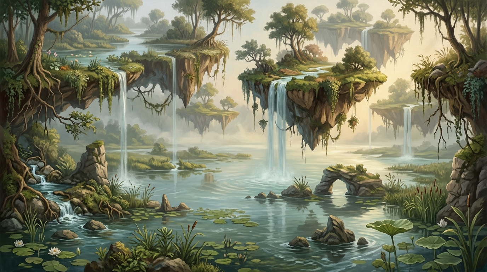
Davanti a voi si apre un vasto specchio d'acqua, così limpido e immobile da sembrare quasi una superficie di vetro. Le rive sono delimitate da pietre chiare, canneti e salici dalle fronde lunghissime, che sfiorano dolcemente l'acqua. Le loro chiome ricadono verso la superficie, creando ombre leggere che si allungano sulle rive. Lo stagno si estende ben oltre ciò che riuscite a distinguere, punteggiato da piccole isole ricoperte di vegetazione. Alcune sembrano galleggiare appena sopra la superficie, sospese a pochi centimetri dall'acqua, mentre altre sono collegate alla terraferma da ponti naturali formati da radici e piante acquatiche. In lontananza, il paesaggio si fa ancora più insolito. Alcune cascate, invece di precipitare verso il basso, risalgono lentamente dalle acque e si innalzano verso il cielo, dissolvendosi tra le nuvole. Piccoli rivoli seguono traiettorie impossibili, mentre la superficie dello stagno riflette immagini che non sempre corrispondono a ciò che si trova sopra di essa. L'aria è fresca e umida. Si sente il lieve sciabordio dell'acqua contro le rive, accompagnato dal fruscio dei canneti e dal canto sommesso di creature nascoste tra la vegetazione.
Qua e là, piccoli movimenti attirano la vostra attenzione. Tra le rive si muovono alcune creature anfibie, simili a grandi rane, che saltano tra le pietre, si immergono nell'acqua e riemergono poco distante, emettendo occasionalmente brevi gracidi. Sulle isole più lontane, invece, notate strani uccelli acquatici dalle piume trasparenti. Alcuni nuotano sotto la superficie, muovendosi con agilità come se stessero volando nell'acqua; poi, con un rapido slancio, emergono dallo stagno e si librano in aria, raggiungendo le isole dove si posano tra la vegetazione. Nonostante le stranezze che caratterizzano questo luogo, Morbìluna trasmette una sensazione di quiete. È come se il tempo scorresse più lentamente, lasciando spazio a un silenzio profondo e malinconico. Davanti a voi si estende un territorio completamente diverso da quelli attraversati finora.
Morbìluna è una regione acquatica caratterizzata da un grande stagno, corsi d'acqua dalle direzioni insolite, cascate che risalgono verso il cielo e piccole isole sospese appena sopra la superficie. Le sue rive sono circondate da pietre bianche, canneti e salici dalle fronde lunghissime, mentre la presenza di specchi d'acqua e riflessi insoliti contribuisce a creare un'atmosfera silenziosa e malinconica.
Abitanti e creature


Regole e particolarità della regione
Una delle caratteristiche più insolite della regione riguarda il comportamento delle sue acque. Riflessi, correnti e movimenti non seguono sempre le normali leggi fisiche: alcune cascate scorrono verso l'alto, piccoli corsi d'acqua sembrano procedere in direzioni impossibili e le immagini riflesse sulla superficie dello stagno possono non corrispondere perfettamente alla realtà. Durante l'esplorazione, gli avventurieri potrebbero inoltre imbattersi nelle ninfe che popolano alcune zone dello stagno. Queste creature emettono un canto delicato e melodioso, capace di attirare l'attenzione delle creature viventi e spingerle ad avvicinarsi all'acqua. Ogni personaggio esposto al loro richiamo potrebbe essere indotto a raggiungerle, fino a entrare nello stagno se non viene fermato. I compagni possono interrompere l'effetto richiamando la sua attenzione o intervenendo fisicamente per trattenerlo. Le ninfee non sono necessariamente malvagie: il pericolo deriva dalla loro capacità di attirare inconsapevolmente le creature verso l'acqua.
Esplorazione e incontri
Durante l'esplorazione, il Master può valorizzare la natura particolare dello stagno attraverso piccoli eventi ambientali, incontri con le creature acquatiche e fenomeni legati al comportamento insolito delle acque. Non tutte le presenze incontrate devono rappresentare un pericolo: alcune possono limitarsi a osservare gli avventurieri, mentre altre potrebbero avvicinarsi incuriosite o offrire occasioni di interazione. Le creature anfibie e gli uccelli acquatici contribuiscono a rendere la regione un ecosistema vivo e popolato. Le ninfee, invece, possono introdurre momenti di pericolo e tensione, soprattutto quando i personaggi si muovono lungo le rive o attraversano zone dello stagno ricche di vegetazione. Rokasar rappresenta un'importante occasione di interazione e può fornire informazioni sul Giardino e su un modo per raggiungere Veestalia. Tuttavia, tende a rivelare gradualmente ciò che conosce e non offre automaticamente il proprio aiuto: saranno l'atteggiamento e le richieste degli avventurieri a determinare quanto sarà disposto a raccontare.
Collegamenti e sviluppi dell'avventura
Morbìluna custodisce uno dei passaggi che conducono a Veestalia. Proseguendo lungo i sentieri indicati sulla mappa, gli avventurieri possono raggiungere Brumacava – Le Grotte delle Lanterne attraverso una galleria sotterranea situata dietro la casa di Rokasar.
 La vegetazione davanti a voi comincia lentamente a diradarsi, lasciando spazio a una scalinata di pietra che scende lungo il fianco della collina. I gradini sono antichi e consumati, ricoperti qua e là da muschio e piccole piante rampicanti. Le radici degli alberi si intrecciano lungo i bordi del percorso, formando archi naturali che sembrano accompagnarvi verso il basso. Man mano che procedete, il rumore della foresta si allontana, sostituito da un suono lieve e regolare: il movimento dell'acqua. L'aria diventa più fresca e umida, mentre un delicato profumo floreale comincia a diffondersi tutt'intorno. Alla fine della discesa, la scalinata termina sulle rive di un grande specchio d'acqua. Davanti a voi si apre un paesaggio tranquillo e luminoso, punteggiato da ninfee dalle corolle insolitamente grandi. I loro petali, candidi e delicati, sfumano in tonalità rosate e lilla, mentre al centro di alcuni fiori brillano piccoliriflessi dorati.
La vegetazione davanti a voi comincia lentamente a diradarsi, lasciando spazio a una scalinata di pietra che scende lungo il fianco della collina. I gradini sono antichi e consumati, ricoperti qua e là da muschio e piccole piante rampicanti. Le radici degli alberi si intrecciano lungo i bordi del percorso, formando archi naturali che sembrano accompagnarvi verso il basso. Man mano che procedete, il rumore della foresta si allontana, sostituito da un suono lieve e regolare: il movimento dell'acqua. L'aria diventa più fresca e umida, mentre un delicato profumo floreale comincia a diffondersi tutt'intorno. Alla fine della discesa, la scalinata termina sulle rive di un grande specchio d'acqua. Davanti a voi si apre un paesaggio tranquillo e luminoso, punteggiato da ninfee dalle corolle insolitamente grandi. I loro petali, candidi e delicati, sfumano in tonalità rosate e lilla, mentre al centro di alcuni fiori brillano piccoliriflessi dorati.
 Tra le foglie galleggianti si muovono lentamente alcune figure. A prima vista sembrano semplici fiori mossi dalla corrente, ma osservandole meglio notate che le corolle si inclinano nella vostra direzione, quasi si fossero accorte del vostro arrivo. Un suono delicato si diffonde sull'acqua. È simile a un canto lontano, appena percettibile. Per un istante avete la sensazione che quel richiamo sia rivolto proprio a voi. Le ninfee ondeggiano lentamente, alcune sembrano avvicinarsi alla riva. L'acqua è limpida e invitante. Eppure, più a lungo osservate quei fiori, più diventa difficile distogliere lo sguardo.
Tra le foglie galleggianti si muovono lentamente alcune figure. A prima vista sembrano semplici fiori mossi dalla corrente, ma osservandole meglio notate che le corolle si inclinano nella vostra direzione, quasi si fossero accorte del vostro arrivo. Un suono delicato si diffonde sull'acqua. È simile a un canto lontano, appena percettibile. Per un istante avete la sensazione che quel richiamo sia rivolto proprio a voi. Le ninfee ondeggiano lentamente, alcune sembrano avvicinarsi alla riva. L'acqua è limpida e invitante. Eppure, più a lungo osservate quei fiori, più diventa difficile distogliere lo sguardo.
Le ninfee che popolano questo tratto di Morbìluna non sono semplici piante acquatiche. Sono creature magiche legate allo stagno, capaci di esercitare un'influenza sulla volontà di chi si avvicina alle loro acque. Non attaccano direttamente i personaggi. Il loro pericolo consiste proprio nella capacità di attirare le creature viventi verso lo stagno, facendo apparire l'acqua come un luogo accogliente e irresistibile.
Quando i personaggi si fermano a osservare le ninfee o si soffermano ad ascoltarne il canto, il Master richiede una prova di Volontà, o una caratteristica equivalente nel sistema utilizzato.
Proseguendo lungo la riva, notate poco più avanti un piccolo molo di legno che si protende sulle acque dello stagno. Alcune assi appaiono consumate dal tempo e una piccola imbarcazione è ormeggiata al bordo, oscillando dolcemente sotto il movimento dell'acqua. Non sembra essersi nessuno nei dintorni.
 Raggiungendo il molo, notate che la struttura si protende dalla riva verso le acque dello stagno. Le assi di legno sono consumate dal tempo e presentano alcune crepe, ma sembrano ancora abbastanza solide da sostenere il peso di una persona. Poco distante, piantata nel terreno, si trova una vecchia segnaletica di legno. Le indicazioni sono incise in lettere ormai sbiadite, ma alcune risultano ancora leggibili:
Raggiungendo il molo, notate che la struttura si protende dalla riva verso le acque dello stagno. Le assi di legno sono consumate dal tempo e presentano alcune crepe, ma sembrano ancora abbastanza solide da sostenere il peso di una persona. Poco distante, piantata nel terreno, si trova una vecchia segnaletica di legno. Le indicazioni sono incise in lettere ormai sbiadite, ma alcune risultano ancora leggibili:
Est – Brumacava • Nord – Nivralume • Sud – Casa di Rokasar • Ovest – V........
Quest'ultima indicazione è quasi completamente cancellata, consumata dal tempo e dall'esposizione agli agenti atmosferici. Rimangono soltanto alcune tracce delle lettere, insufficienti per distinguere chiaramente il nome. I traghettatori sono figure misteriose legate alle acque di Morbìluna. Hanno sembianze umanoidi e il loro corpo sembra composto interamente d'acqua, ma la loro natura è ben diversa da quella delle normali creature che abitano il Giardino. Non possiedono una voce e non dispongono di alcun mezzo per comunicare con i visitatori. Non rispondono alle domande, non reagiscono ai tentativi di dialogo e non mostrano particolare interesse per ciò che accade sulla riva. I traghettatori sono anime intrappolate al suo interno. Un tempo erano individui provenienti dal mondo esterno, proprio come i personaggi. La loro permanenza nel Giardino di Auralis li ha privati dei ricordi e della possibilità di comunicare. Non conservano memoria della propria vita precedente e non ricordano come siano finiti in quel luogo. Non sono ostili. Rimangono generalmente immobili a una certa distanza dalla riva, senza salire sulla terraferma o avvicinarsi all'imbarcazione. Talvolta scompaiono dissolvendosi nell'acqua, per poi riemergere in un altro punto dello stagno. Il collegamento con Veestalia Il viaggio verso Veestalia
 Mentre vi avvicinate al bordo del molo, qualcosa comincia a muoversi sotto la superficie. Lentamente, alcune figure emergono dall'acqua, sollevandosi fino a raggiungere la superficie con movimenti silenziosi. Hanno sembianze vagamente umanoidi, ma i loro corpi sembrano composti dalla stessa acqua dello stagno. Rimangono immobili a una certa distanza dalla riva, rivolti nella vostra direzione. Non pronunciano una parola e non mostrano alcuna reazione evidente alla vostra presenza. Per qualche istante, l'unico suono che accompagna la scena è quello dell'acqua che lambisce le assi del molo.
Mentre vi avvicinate al bordo del molo, qualcosa comincia a muoversi sotto la superficie. Lentamente, alcune figure emergono dall'acqua, sollevandosi fino a raggiungere la superficie con movimenti silenziosi. Hanno sembianze vagamente umanoidi, ma i loro corpi sembrano composti dalla stessa acqua dello stagno. Rimangono immobili a una certa distanza dalla riva, rivolti nella vostra direzione. Non pronunciano una parola e non mostrano alcuna reazione evidente alla vostra presenza. Per qualche istante, l'unico suono che accompagna la scena è quello dell'acqua che lambisce le assi del molo.
▶ [Nota Master]
I traghettatori rappresentano uno dei modi per condurre i personaggi verso Veestalia – La Costa della Sabbia Dorata. Per ottenere il loro servizio, tuttavia, gli avventurieri dovranno prima completare la quest descritta nella sezione 6 - La Casa di Rokasar.Come ricompensa, Rokasar consegnerà loro una particolare pergamena, necessaria per ottenere il passaggio. L'imbarcazione li condurrà verso Veestalia, permettendo loro di attraversare le acque di Morbìluna e raggiungere la regione desertica.
Quando i personaggi si presenteranno nuovamente al molo con la pergamena, potranno mostrarla ai traghettatori. Dopo averla osservata, le creature reagiranno alla presenza del documento avvicinandosi all'imbarcazione. Senza pronunciare una parola, indicheranno ai personaggi di salire a bordo.
Una volta che gli avventurieri saranno saliti sull'imbarcazione, i traghettatori li condurranno attraverso le acque di Morbìluna, fino a raggiungere
Veestalia – La Costa della Sabbia Dorata.
Durante il tragitto non sarà possibile comunicare con loro né ottenere informazioni sulla destinazione o sulla natura del viaggio.Una volta raggiunta la regione, i traghettatori scompariranno, dissolvendosi nelle acque. La loro anima verrà finalmente liberata e farà ritorno nel mondo esterno. Non recupereranno i ricordi della propria vita precedente, conservando soltanto una vaga sensazione simile a quella di un sogno confuso. Questa è la sorte di chiunque riesca a lasciare il Giardino attraverso il loro aiuto.
 Poco distante dalla riva meridionale dello stagno, nascosta tra la vegetazione, sorge una piccola abitazione costruita con rami intrecciati, radici ed edera. La struttura sembra quasi essere cresciuta spontaneamente tra gli alberi, fondendosi con la vegetazione circostante. Nei pressi dell'ingresso sono sparsi oggetti curiosi: vecchi recipienti, frammenti di ceramica, piccoli manufatti e strani reperti di cui non riuscite a comprendere immediatamente la funzione. Alcuni sono disposti con cura su mensole improvvisate, altri sembrano accumulati senza un ordine preciso Dall'interno provengono rumori insoliti, accompagnati da un borbottio sommesso. Quando vi avvicinate, una creatura anfibia fa capolino dall'ingresso. Ha un aspetto singolare e uno sguardo vivace, che si posa immediatamente su di voi con evidente curiosità.
Poco distante dalla riva meridionale dello stagno, nascosta tra la vegetazione, sorge una piccola abitazione costruita con rami intrecciati, radici ed edera. La struttura sembra quasi essere cresciuta spontaneamente tra gli alberi, fondendosi con la vegetazione circostante. Nei pressi dell'ingresso sono sparsi oggetti curiosi: vecchi recipienti, frammenti di ceramica, piccoli manufatti e strani reperti di cui non riuscite a comprendere immediatamente la funzione. Alcuni sono disposti con cura su mensole improvvisate, altri sembrano accumulati senza un ordine preciso Dall'interno provengono rumori insoliti, accompagnati da un borbottio sommesso. Quando vi avvicinate, una creatura anfibia fa capolino dall'ingresso. Ha un aspetto singolare e uno sguardo vivace, che si posa immediatamente su di voi con evidente curiosità.
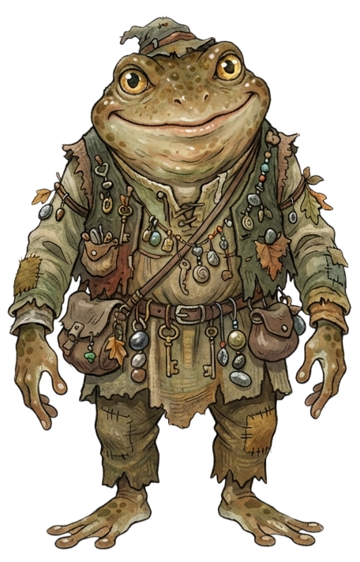
“Oh! Oh! Ma guardate un po' chi abbiamo qui! Visite! Non capita spesso di ricevere visite da queste parti. Avanti, avanti, non restate sulla soglia! Fate attenzione a dove mettete i piedi, però… ci sono cose qui dentro che non vorrei vedere rotte. Alcune sono piuttosto rare, altre… beh, diciamo che non ho ancora capito bene cosa siano! Ah quasi dimenticato! Piacere, sono Rolasar”“Ditemi, da dove venite? Non mi sembra di avervi mai incontrati prima. Siete viaggiatori? Esploratori? Oppure siete semplicemente capitati qui per caso? Oh, ma non fate caso al disordine! Sapete, quando si collezionano oggetti provenienti da terre lontane, trovare un posto per ogni cosa diventa un'impresa! Ogni reperto ha una storia, ogni manufatto nasconde un segreto… e io non posso certo permettermi di lasciarli dimenticati da qualche parte! Ma ditemi, cosa vi porta nella mia umile dimora? Sono sempre felice di fare quattro chiacchiere con qualcuno di nuovo!”
Rokasar è una creatura anfibia che vive nella regione di Morbìluna in una piccola abitazione costruita tra la vegetazione, poco distante dalla riva meridionale dello stagno. È un individuo eccentrico, curioso e particolarmente loquace. Nutre una grande passione per le reliquie, i manufatti antichi e gli oggetti provenienti da terre lontane. Nel corso del tempo ha accumulato una collezione piuttosto insolita, composta da reperti di varia natura, alcuni dei quali non è nemmeno in grado di identificare. Non è ostile nei confronti dei visitatori e tende ad accogliere con entusiasmo chiunque raggiunga la sua abitazione. Ama conversare, conoscere la provenienza dei viaggiatori e ascoltare racconti sulle loro esperienze.
Le conoscenze di Rokasar
Rokasar, nel corso della sua lunga permanenza nel Giardino di Auralis, ha raccolto informazioni, ascoltato racconti e assistito a eventi che gli hanno permesso di comprenderne la vera natura. Sa che non si tratta di un luogo appartenente al mondo naturale, ma di un piano extradimensionale creato da una dea primordiale della natura per proteggere l'anima di una bambina chiamata Dalia. È a conoscenza del fatto che la bambina si trova nascosta in una parte del 3b - Il Labirinto di Dalia e che la sua esistenza è legata a qualcosa di molto più grande di quanto gli abitanti possano immaginare. Conosce anche la sua origine divina e il motivo per cui la dea ha voluto proteggerla: il potere di Dalia è talmente grande da attirare l'interesse di entità che vorrebbero impossessarsene o sfruttarlo per i propri scopi.
Nel corso degli anni, Rokasar ha inoltre accompagnato diversi bambini provenienti dal mondo esterno che si erano smarriti nel Giardino di Auralis. Alcuni erano spaventati, altri confusi e incapaci di ricordare come fossero arrivati fin lì. Queste esperienze gli hanno permesso di comprendere che alcuni ingressi non avvengono per caso e che qualcuno, proveniente dall'esterno, sta cercando di raggiungere Dalia. Nonostante le numerose conoscenze, Rokasar non è disposto a confidarsi con chiunque. È curioso e loquace, ma non ingenuo: prima di condividere informazioni tanto importanti, vuole capire che tipo di persone abbia davanti. Osserva il loro comportamento, ascolta le motivazioni che li hanno condotti nel *Giardino* e cerca di distinguere le intenzioni sincere dall'avidità, dall'ambizione e dal desiderio di ottenere vantaggi personali.
Se gli avventurieri dimostrano onestà, rispetto e attenzione nei confronti degli altri, potrà concedere loro gradualmente la propria fiducia. Inizialmente potrebbe limitarsi a raccontare le esperienze vissute con i bambini provenienti dal mondo esterno e accennare alla presenza di strane figure interessate ad alcune zone del Giardino di Auralis. Se li ritiene degni della propria fiducia, sarà disposto a rivelare informazioni più importanti, parlando di Dalia e della vera origine del Giardino.
Al contrario, se gli avventurieri si dimostrano arroganti, avidi o interessati esclusivamente a ottenere vantaggi personali, Rokasar eviterà di condividere qualsiasi informazione. Potrebbe mantenere una cortesia superficiale, eludere le loro domande oppure interrompere la conversazione e invitarli a lasciare la sua abitazione. Potrà proporre loro il recupero della Lancia di Bisercine, senza rivelare nulla della storia del luogo. In questo caso, per lui si tratterà semplicemente di uno scambio: un oggetto in cambio di un altro, senza ulteriori confidenze.
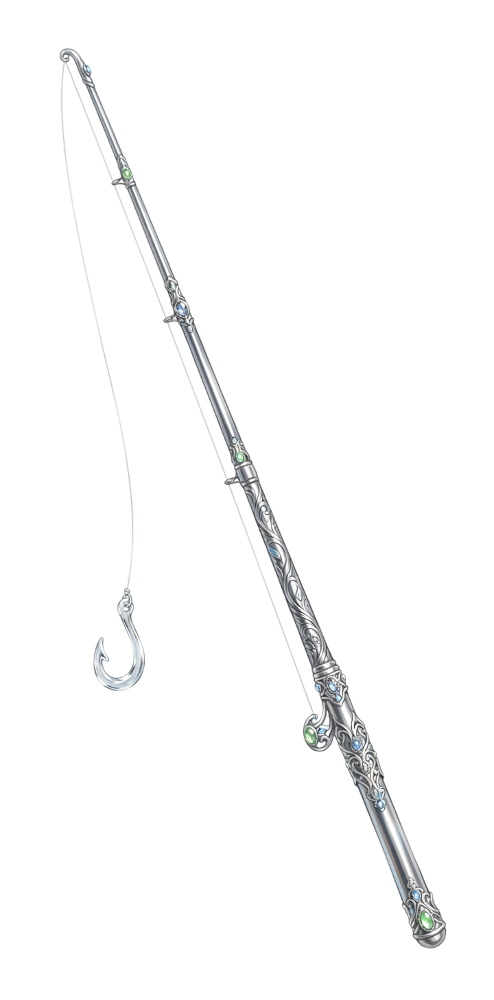
Quest: Recupero Lancia di Bisercine
Se i personaggi chiedono informazioni o cercano un modo per proseguire il viaggio, Rokasar può rivelare di conoscere una possibilità. Per raggiungere Veestalia – La Costa della Sabbia Dorata e, quindi, uscire dal Giardino è necessario affidarsi ai traghettatori silenziosi che si trovano presso 5 - il Molo. Queste creature, tuttavia, non accompagnano chiunque: per ottenere il loro servizio occorre presentare una particolare pergamena magica. Rokasar può procurare questo documento in cambio di un favore: desidera che gli avventurieri recuperino una reliquia custodita a Brumacava la Lancia di Bisercine, una particolare canna da pesca magica in grado di recuperare oggetti dai fondali. Il manufatto si trova nella 11 - La Galleria dei Mille Riflessi, all'interno del Portale di Askatax. In cambio del suo recupero, manterrà la promessa e consegnerà ai personaggi la pergamena necessaria per raggiungere Veestalia.
La pergamena
Il documento appare completamente vuoto agli occhi degli avventurieri, privo di scritte, simboli o incisioni. Il suo contenuto è visibile esclusivamente ai traghettatori silenziosi, che non possiedono una voce né altri mezzi per comunicare ciò che vi è riportato. La pergamena rappresenta una sorta di lasciapassare, riconosciuto dai traghettatori. I personaggi dovranno quindi presentarla alle creature presso il molo. Una volta riconosciuto il documento, i traghettatori potranno accompagnarli verso la destinazione. Per ulteriori dettagli sul comportamento dei traghettatori e sul viaggio, consulta la relativa sezione 5 - il Molo.
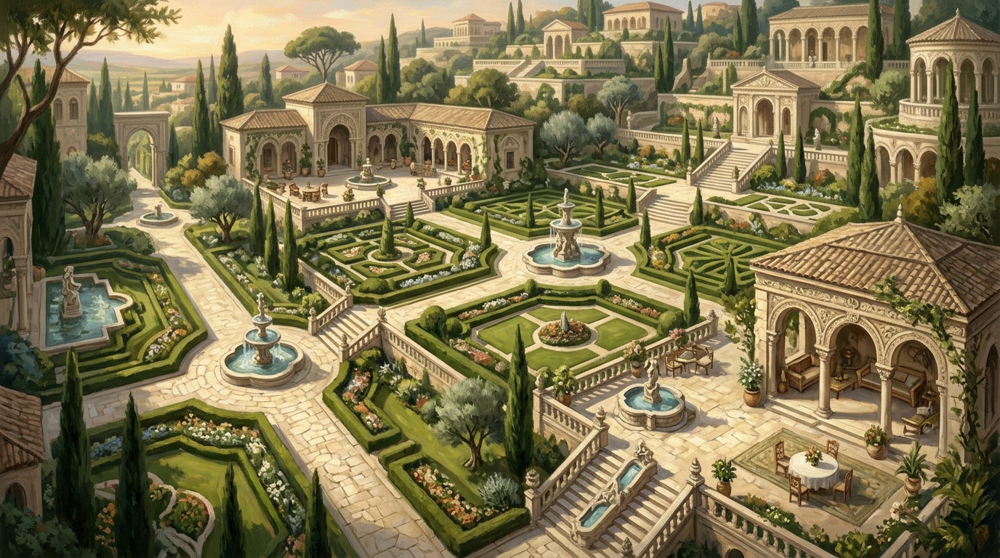
Lasciandovi alle spalle i territori attraversati finora, il paesaggio comincia lentamente a cambiare. La vegetazione si dirada e lascia spazio a giardini ordinati, dove siepi accuratamente potate delimitano vialetti lastricati e aiuole ricche di fiori. Lungo il percorso compaiono fontane di pietra, statue dalle forme eleganti e piccoli padiglioni circondati da pergolati fioriti. Proseguendo, raggiungete un ampio viale che si estende davanti a voi, delimitato da alte colonne e alberi disposti a intervalli regolari. Il pavimento è composto da grandi lastre di pietra chiara, perfettamente accostate, mentre elaborate decorazioni floreali ornano i bordi del percorso.
Oltre il viale si apre un complesso architettonico di straordinaria eleganza. Padiglioni dalle ampie terrazze, porticati sostenuti da colonne decorate e scalinate conducono verso giardini disposti su diversi livelli. Fontane zampillanti animano piccole piazze, mentre statue di figure umanoidi e creature fantastiche osservano immobili i passanti dai propri piedistalli. Qua e là scorgete alcune figure che passeggiano tra i giardini. Indossano abiti raffinati, mantelli ricamati e gioielli dalle forme insolite. Alcuni conversano tranquillamente sotto i porticati, altri si riuniscono attorno a tavoli imbanditi, mentre poco più in là un piccolo gruppo assiste a uno spettacolo accompagnato da musica e danze.
Nonostante l'imponenza delle strutture, non sembrano esserci abitazioni comuni né botteghe. Ogni spazio appare progettato per accogliere incontri, ricevimenti e occasioni di svago. Tutto è curato nei minimi dettagli, come se l'intero territorio fosse stato preparato per ospitare un evento destinato a non finire mai. Mentre osservate il luogo, alcune delle figure presenti si accorgono della vostra arrivata. I loro sguardi si posano su di voi senza sorpresa, accompagnati da sorrisi cordiali e curiosi. Poco dopo, un piccolo gruppo si avvicina con passo elegante.
“Benvenuti a Zaffronda, cari ospiti! La Corte dei Padiglioni è lieta di accogliervi. Speriamo che il vostro soggiorno sia piacevole e che possiate trovare tutto ciò che desiderate. Avete certamente viaggiato a lungo: lasciate che vi mostriamo le meraviglie di questo luogo.”
Con un gesto garbato, uno degli individui indica i padiglioni e i giardini circostanti, invitandovi a seguirli. Per un momento, tutto sembra perfetto. L'accoglienza è calorosa, l'atmosfera raffinata e ogni cosa appare al proprio posto. Eppure, c'è qualcosa di insolito nel modo in cui questi sconosciuti vi osservano: non sembrano semplicemente felici di ricevere nuovi visitatori. È quasi come se sapessero già chi siete e cosa vi abbia condotti fin qui.
Zaffronda è una vera e propria Corte fatata, organizzata attorno a ricevimenti, udienze, banchetti, spettacoli e occasioni di incontro. I suoi padiglioni, le sale aperte e gli eleganti viali costituiscono un ambiente raffinato e teatrale, nel quale ogni attività sembra seguire un preciso cerimoniale. I suoi abitanti sono nobili fatati, figure dall'aspetto elegante e dalla grazia quasi innaturale, che accolgono ogni nuovo arrivato come un ospite illustre e atteso da tempo. Nessuno sembra sorpreso dalla presenza degli avventurieri; al contrario, tutti si mostrano disponibili a offrire ospitalità, accompagnarli tra i padiglioni e coinvolgerli nelle attività della Corte.
Abitanti e creature 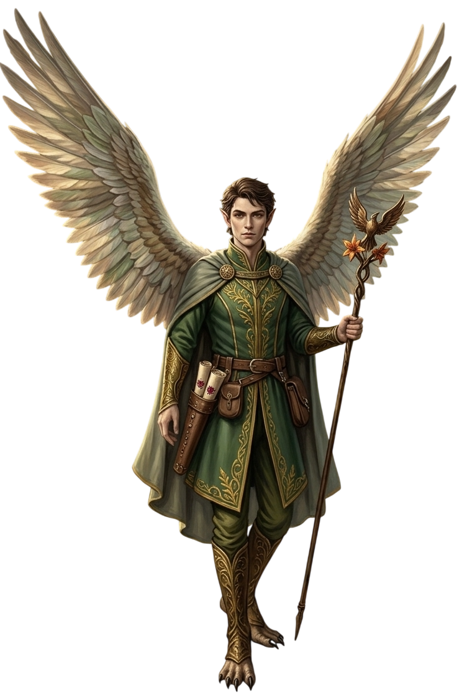 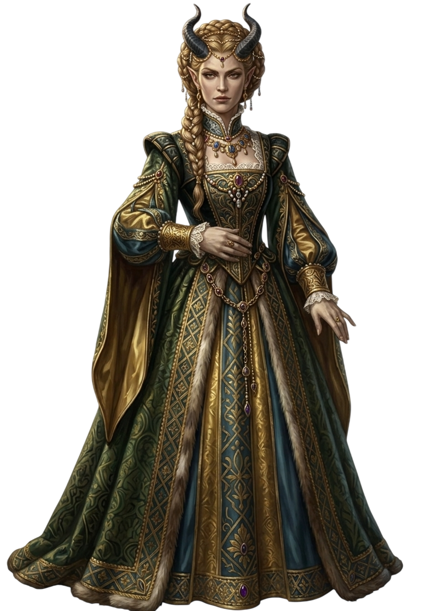
Regole e particolarità della regione
La caratteristica più insidiosa di Zaffronda riguarda la capacità della Corte fatata di percepire i desideri più profondi di chi vi entra e di offrire a ciascun ospite la possibilità di vederli realizzati. A chi desidera ricchezza vengono mostrati tesori e promesse di una vita senza privazioni; a chi cerca riconoscimento vengono concessi prestigio e considerazione; a chi ha perduto una persona cara può essere offerta l'illusione di incontrarla nuovamente. Chi desidera potere può ottenere autorità e influenza, mentre chi è stanco di lottare può trovare un rifugio apparentemente sicuro, dove non avere più nulla da temere. Le offerte non vengono presentate come incantesimi o inganni: tutto appare reale, concreto e perfettamente naturale. Gli ospiti possono partecipare ai ricevimenti, godere dei privilegi concessi e trascorrere il proprio tempo nella Corte senza essere costretti a prendere alcuna decisione. Nessuno impedisce loro di andarsene e nessuno chiede apertamente di rimanere per sempre. Il vero pericolo si manifesta quando un visitatore decide di appartenere definitivamente alla Corte fatata. Chi accetta questa condizione viene sacrificato e trasformato in una statua di pietra, destinata a entrare a far parte del 9 – Il Viale delle Statue Inclinate. La sua coscienza rimane intrappolata nella pietra. I nobili fatati presentano questa trasformazione come un grande privilegio, utilizzando espressioni come «Onore della Corte» e «Dono dell'Eternità». Le statue conservano espressioni e atteggiamenti che riflettono spesso le emozioni provate nel momento della trasformazione. Quando nessuno le osserva, possono inoltre cambiare lentamente posizione, contribuendo all'atmosfera inquietante del viale.
Esplorazione e incontri
Durante la permanenza a Zaffronda, il Master dovrebbe mantenere un'atmosfera di costante ospitalità e meraviglia, lasciando emergere gradualmente il lato più inquietante della Corte fatata. I personaggi possono essere invitati a partecipare a banchetti, assistere a spettacoli, prendere parte a udienze o intrattenere conversazioni con i nobili fatati. Ogni occasione può diventare un pretesto per offrire loro qualcosa che desiderano profondamente. È importante evitare che le intenzioni della Corte risultino immediatamente evidenti. La loro cortesia è autentica nelle forme, anche quando nasconde un intento manipolatorio. Non cercano di costringere gli avventurieri a restare, ma di convincerli che non abbiano alcun motivo per andarsene.Se i personaggi manifestano l'intenzione di lasciare Zaffronda, la Corte fatata può tentare di trattenerli con ulteriori attenzioni: un ultimo ricevimento, un dono speciale, uno spettacolo esclusivo o un'occasione che sembra troppo preziosa per essere rifiutata. Queste offerte devono lasciare ai giocatori la libertà di scegliere, senza trasformare la permanenza in una decisione forzata.
Collegamenti e sviluppi dell'avventura
Zaffronda è collegata alle regioni circostanti attraverso i percorsi indicati sulla mappa. Uno dei passaggi principali si trova al termine del 9 – Il Viale delle Statue Inclinate, dove un imponente cancello conduce a una galleria sotterranea diretta a Brumacava – Le Grotte delle Lanterne.
 Proseguendo tra i viali ordinati di Zaffronda, raggiungete un ampio padiglione sopraelevato, circondato da eleganti colonne di pietra chiara. La struttura non presenta pareti né porte: il tetto, sostenuto da pilastri finemente decorati, si estende sopra una piattaforma rialzata, lasciando l'ambiente completamente aperto verso i giardini circostanti. Il pavimento è composto da grandi lastre di marmo, disposte secondo motivi geometrici. Al centro della struttura si trova una pedana circolare, leggermente sopraelevata, circondata da sedute riccamente decorate. Alcuni tavolini sono disposti lungo i lati del padiglione, mentre vasi di fiori e piccoli bracieri profumati completano l'arredamento. All'interno sono presenti diverse figure dall'aspetto raffinato. Alcuni siedono composti sulle panche, altri conversano sottovoce, mentre poco distante un gruppo di nobili fatati sembra essere impegnato in una discussione. Nonostante la presenza di numerosi ospiti, nell'ambiente regna un'atmosfera tranquilla e composta. Al centro della pedana si trova una figura elegantemente vestita, intenta ad ascoltare le parole di un visitatore. Non appena questi termina di parlare, la figura sorride e risponde con tono cordiale, come se stesse concedendo un favore atteso da tempo. Nessuno sembra preoccuparsi della vostra presenza. Alcuni degli abitanti vi rivolgono brevi sorrisi, altri continuano tranquillamente le proprie conversazioni.
Proseguendo tra i viali ordinati di Zaffronda, raggiungete un ampio padiglione sopraelevato, circondato da eleganti colonne di pietra chiara. La struttura non presenta pareti né porte: il tetto, sostenuto da pilastri finemente decorati, si estende sopra una piattaforma rialzata, lasciando l'ambiente completamente aperto verso i giardini circostanti. Il pavimento è composto da grandi lastre di marmo, disposte secondo motivi geometrici. Al centro della struttura si trova una pedana circolare, leggermente sopraelevata, circondata da sedute riccamente decorate. Alcuni tavolini sono disposti lungo i lati del padiglione, mentre vasi di fiori e piccoli bracieri profumati completano l'arredamento. All'interno sono presenti diverse figure dall'aspetto raffinato. Alcuni siedono composti sulle panche, altri conversano sottovoce, mentre poco distante un gruppo di nobili fatati sembra essere impegnato in una discussione. Nonostante la presenza di numerosi ospiti, nell'ambiente regna un'atmosfera tranquilla e composta. Al centro della pedana si trova una figura elegantemente vestita, intenta ad ascoltare le parole di un visitatore. Non appena questi termina di parlare, la figura sorride e risponde con tono cordiale, come se stesse concedendo un favore atteso da tempo. Nessuno sembra preoccuparsi della vostra presenza. Alcuni degli abitanti vi rivolgono brevi sorrisi, altri continuano tranquillamente le proprie conversazioni.
Qui si svolgono le udienze della Corte fatata. Qui i nobili fatati ricevono visitatori, ascoltano richieste, concedono favori e discutono questioni di interesse per la Corte. Gli avventurieri possono assistere a diverse udienze e osservare il modo in cui vengono accolte le richieste. I nobili si mostrano sempre cortesi e disponibili, ascoltando con attenzione e rispondendo con modi impeccabili. Le loro concessioni vengono presentate come gesti di generosità e privilegi concessi a chi sa rivolgersi alla Corte nel modo appropriato.
Potrebbero assistere a una richiesta di ricchezza, a una supplica per riottenere qualcosa perduto o alla concessione di un titolo e di un prestigio inaspettati. Le risposte della Corte fatata devono apparire sempre sincere e soddisfacenti, senza lasciare intuire immediatamente le conseguenze nascoste delle sue offerte. Se i personaggi desiderano rivolgersi direttamente ai nobili, possono essere invitati ad attendere il proprio turno oppure accompagnati davanti a una figura incaricata di ascoltare le loro richieste. Non è necessario che ottengano subito ciò che desiderano: la Corte fatata preferisce comprendere le aspirazioni dei propri ospiti prima di formulare un'offerta adeguata.
 Proseguendo tra i padiglioni di Zaffronda, raggiungete una piccola piazza circolare, circondata da colonne slanciate e alberi dalle chiome curate. Al centro si erge una fontana di marmo bianco, decorata con eleganti figure fatate e motivi floreali. L'acqua scorre lentamente lungo i diversi livelli della struttura, raccogliendosi in una vasca ampia e poco profonda. La superficie è limpida e immobile, quasi fosse uno specchio. Avvicinandovi, notate che lungo il bordo della vasca e sulla base della fontana sono incisi numerosi nomi. Alcuni sono profondi e ben conservati, altri sembrano consumati dal tempo, ma tutti sono accompagnati da piccoli ornamenti e decorazioni. Non riuscite a riconoscere nessuno di quei nomi. Poco distante, alcuni nobili fatati conversano tranquillamente, mentre altri si soffermano davanti alla fontana, osservando le incisioni con un'espressione soddisfatta e composta.
Proseguendo tra i padiglioni di Zaffronda, raggiungete una piccola piazza circolare, circondata da colonne slanciate e alberi dalle chiome curate. Al centro si erge una fontana di marmo bianco, decorata con eleganti figure fatate e motivi floreali. L'acqua scorre lentamente lungo i diversi livelli della struttura, raccogliendosi in una vasca ampia e poco profonda. La superficie è limpida e immobile, quasi fosse uno specchio. Avvicinandovi, notate che lungo il bordo della vasca e sulla base della fontana sono incisi numerosi nomi. Alcuni sono profondi e ben conservati, altri sembrano consumati dal tempo, ma tutti sono accompagnati da piccoli ornamenti e decorazioni. Non riuscite a riconoscere nessuno di quei nomi. Poco distante, alcuni nobili fatati conversano tranquillamente, mentre altri si soffermano davanti alla fontana, osservando le incisioni con un'espressione soddisfatta e composta.
La fontana custodisce i nomi di coloro che, nel corso del tempo, hanno accettato di appartenere definitivamente alla Corte fatata. Si tratta degli ospiti che, sedotti dalle promesse dei nobili fatati, hanno scelto di rinunciare alla propria libertà in cambio della realizzazione dei loro desideri. La Corte fatata presenta questo destino come un grande privilegio, definendolo «Onore della Corte» o «Dono dell'Eternità». I nomi vengono incisi sulla fontana per celebrare coloro che, secondo i nobili, hanno ottenuto il diritto di essere ricordati per sempre tra le meraviglie di Zaffronda. In realtà, ogni nome corrisponde a una statua presente nel 9 – Viale delle Statue Inclinate.
Se i personaggi chiedono informazioni sulla fontana, i nobili fatati rispondono con orgoglio, descrivendola come un monumento dedicato agli ospiti più illustri che abbiano mai soggiornato a Zaffronda. Evitano accuratamente di parlare della trasformazione in statue e presentano la permanenza eterna nella Corte fatata come una ricompensa ambita. Se i personaggi domandano a chi appartengano i nomi o cosa significhi ricevere l'«Onore della Corte», i nobili possono limitarsi a risposte vaghe, sostenendo che si tratta di persone che hanno trovato qui la propria felicità e hanno scelto di non andarsene mai più. I personaggi possono esaminare le incisioni e notare che alcuni nomi sembrano molto antichi, mentre altri appaiono relativamente recenti. Non è necessario che riescano a identificare i proprietari: la vera natura della fontana potrà essere compresa solo collegando le informazioni raccolte con ciò che scopriranno nel 9 – Viale delle Statue Inclinate.
 Lasciandovi alle spalle i padiglioni della Corte, imboccate un lungo viale lastricato, fiancheggiato da alberi dalle chiome curate e da eleganti colonne di marmo. Lungo entrambi i lati del percorso si susseguono numerose statue di pietra, raffiguranti uomini, donne e creature dalle forme insolite. Ognuna è diversa dall'altra: alcune indossano abiti raffinati, altre portano mantelli, gioielli o oggetti tra le mani. Avvicinandovi, notate che le statue non sono disposte in modo uniforme. Alcune sembrano rivolte verso il centro del viale, altre hanno il busto inclinato o il capo voltato in direzioni insolite. I loro volti sono sorprendentemente espressivi: alcune figure sorridono serenamente, altre sembrano piangere o fissare un punto lontano con aria assente. Altre ancora presentano espressioni di profondo terrore, con gli occhi spalancati e la bocca aperta in un grido silenzioso. Alcune hanno persino le mani protese in avanti, come se cercassero disperatamente di raggiungere qualcuno o di sfuggire a qualcosa. Proseguendo lungo il viale, avete la sensazione che quelle figure non siano state scolpite per decorare il luogo. Le loro espressioni, così diverse e cariche di emozioni, sembrano raccontare storie che nessuno ha mai avuto il coraggio di ascoltare. In alcuni momenti vi pare persino che le loro posizioni siano cambiate rispetto a quando le avete osservate per la prima volta, ma non riuscite a esserne certi.
Lasciandovi alle spalle i padiglioni della Corte, imboccate un lungo viale lastricato, fiancheggiato da alberi dalle chiome curate e da eleganti colonne di marmo. Lungo entrambi i lati del percorso si susseguono numerose statue di pietra, raffiguranti uomini, donne e creature dalle forme insolite. Ognuna è diversa dall'altra: alcune indossano abiti raffinati, altre portano mantelli, gioielli o oggetti tra le mani. Avvicinandovi, notate che le statue non sono disposte in modo uniforme. Alcune sembrano rivolte verso il centro del viale, altre hanno il busto inclinato o il capo voltato in direzioni insolite. I loro volti sono sorprendentemente espressivi: alcune figure sorridono serenamente, altre sembrano piangere o fissare un punto lontano con aria assente. Altre ancora presentano espressioni di profondo terrore, con gli occhi spalancati e la bocca aperta in un grido silenzioso. Alcune hanno persino le mani protese in avanti, come se cercassero disperatamente di raggiungere qualcuno o di sfuggire a qualcosa. Proseguendo lungo il viale, avete la sensazione che quelle figure non siano state scolpite per decorare il luogo. Le loro espressioni, così diverse e cariche di emozioni, sembrano raccontare storie che nessuno ha mai avuto il coraggio di ascoltare. In alcuni momenti vi pare persino che le loro posizioni siano cambiate rispetto a quando le avete osservate per la prima volta, ma non riuscite a esserne certi.
In fondo al percorso, oltre l'ultima fila di statue, scorgete un imponente cancello di pietra e ferro, decorato con motivi floreali e antiche incisioni. Oltre le sbarre si intravede l'imbocco di una galleria sotterranea, che scompare nell'oscurità.
Le statue che costeggiano il viale sono gli ospiti che, nel corso del tempo, hanno ceduto alle tentazioni della Corte fatata, accettando di rimanere a Zaffronda in cambio della promessa di ottenere ciò che desideravano. Una volta accettato il patto, sono stati trasformati in statue di pietra, conservando la propria coscienza e rimanendo intrappolati per sempre nella loro nuova forma. Le loro espressioni riflettono gli ultimi istanti prima della trasformazione: alcune figure mostrano serenità, altre disperazione, paura o terrore. Le statue cambiano posizione quando nessuno le osserva direttamente, motivo per cui il viale è conosciuto come Viale delle Statue Inclinate. Questo fenomeno contribuisce a creare un senso di inquietudine e a far dubitare gli avventurieri di ciò che hanno realmente visto.
In fondo al viale si trova un grosso cancello che conduce a una galleria sotterranea diretta a Brumacava. Il passaggio non è liberamente accessibile, alcune delle statue presenti lungo il percorso sono in realtà custodi della via e possono animarsi quando qualcuno tenta di raggiungere il cancello. Il loro compito è impedire agli estranei di proseguire.Quando gli avventurieri si avvicinano al cancello, alcune figure si staccheranno dai propri basamenti e prenderanno vita, cercando di bloccare loro il passaggio. Questo scontro rappresenta l'ultimo ostacolo prima di lasciare Zaffronda e raggiungere Brumacava.
I guardiani di pietra
Quando gli avventurieri si avvicinano al grande cancello in fondo al viale, due delle statue presenti lungo il percorso si animeranno improvvisamente. Si tratta di imponenti figure umanoidi di pietra, rimaste immobili fino a quel momento tra le altre sculture. Con movimenti lenti e pesanti, abbandoneranno i propri basamenti e si porteranno al centro del passaggio, bloccando la strada verso il cancello.Le due creature non tenteranno di comunicare né di intimare agli avventurieri di andarsene. Il loro compito è impedire a chiunque non sia autorizzato di raggiungere la galleria sotterranea. Una volta individuati gli intrusi, li considereranno una minaccia e attaccheranno con l'intento di ucciderli. I guardiani combattono senza esitazione, sfruttando la propria forza e la resistenza del corpo di pietra. Possono colpire con pugni poderosi, afferrare gli avversari e scaraventarli a terra, cercando di impedire loro di aggirare il blocco. Non inseguiranno gli avventurieri oltre il viale e concentreranno i propri attacchi su chiunque tenti di raggiungere il cancello.Le seguenti indicazioni costituiscono una base generica da adattare al sistema di gioco utilizzato.
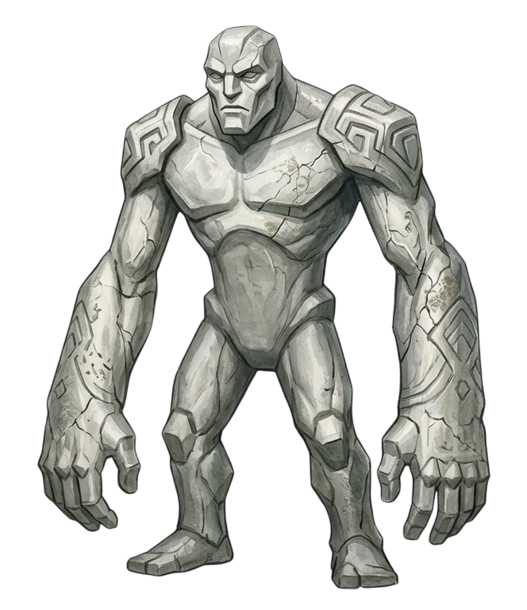
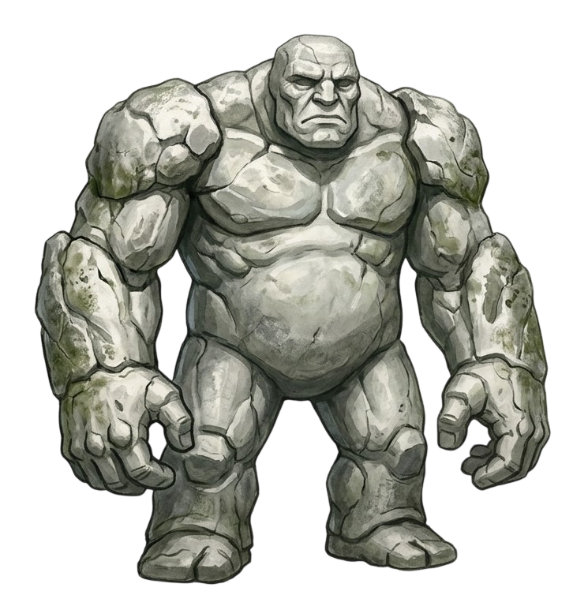
Mappa combattimento
Esiti dello scontro
Questi esiti rappresentano possibili sviluppi dello scontro, non risultati prestabiliti. Il Master deve lasciare che siano le decisioni dei personaggi, le capacità utilizzate e il risultato delle prove a determinarne l'andamento.
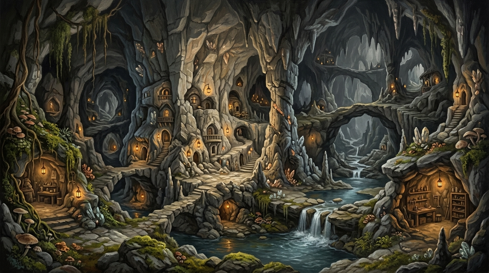
Superato il passaggio, vi ritrovate all'interno di un'immensa cavità sotterranea. Enormi pareti rocciose si innalzano verso un soffitto tanto alto da perdersi nell'oscurità, mentre fiumi dalle acque limpide attraversano il fondo della caverna, insinuandosi tra rocce e formazioni minerali. L'ambiente è rischiarato da una moltitudine di luci. Piante dalle foglie luminescenti crescono lungo le pareti e tra le spaccature della roccia, mentre cristalli di diverse forme e dimensioni emanano bagliori colorati. Qua e là, lanterne sospese illuminano sentieri e piccoli passaggi, creando una calda luce ambrata che contrasta con i riflessi freddi delle pietre. Osservando meglio, notate che alcune cavità sono talmente vaste da ospitare interi boschi sotterranei. Alberi e vegetazione si sviluppano tra le rocce, alimentati da sorgenti nascoste e da una luce che sembra provenire direttamente dalle pareti. In diversi punti, grosse radici si insinuano nella pietra e si allungano lungo le pareti della caverna, come se provenissero da un luogo molto lontano. Nonostante la profondità e l'isolamento di questo ambiente, non avete l'impressione di trovarvi in un luogo deserto. In lontananza scorgete luci in movimento, piccoli passaggi scavati nella roccia e strutture illuminate da lanterne. Da qualche parte risuonano voci indistinte e il rumore di attività che si svolgono nelle profondità.
Brumacava è un vasto sistema di caverne sotterranee, caratterizzato da immense cavità naturali, fiumi sotterranei e ambienti che, in alcuni casi, raggiungono dimensioni tali da ospitare interi boschi. Le pareti rocciose sono attraversate da radici provenienti da Nivralume, che si insinuano nella pietra e si sviluppano lungo le superfici delle grotte, senza che gli abitanti conoscano il motivo di questo fenomeno. La regione è illuminata da piante luminescenti, cristalli e numerose lanterne sospese, che diffondono una luce calda e soffusa. L'atmosfera è raccolta e misteriosa, frequentato da creature che hanno trovato nelle sue profondità un ambiente adatto alla propria esistenza.
Abitanti e creature


Esplorazione e incontri
Durante l'esplorazione, il Master può valorizzare l'atmosfera sotterranea di Brumacava attraverso incontri con gli gnomi artigiani, scambi commerciali nel mercato e la scoperta di antichi passaggi illuminati dalle lanterne. Le grotte offrono un ambiente ricco di dettagli e opportunità di interazione, dove la curiosità e l'ingegno dei personaggi possono essere premiati.
Collegamenti e sviluppi dell'avventura
Brumacava è raggiungibile da Morbìluna, attraverso la galleria sotterranea situata dietro la casa di Rokasar, e da Zaffronda, tramite il passaggio custodito dalle due statue-guardiane animate. Le sue gallerie conducono a luoghi di interesse e possono offrire nuovi spunti per l'avventura: tra questi, la Galleria dei Mille Riflessi, dove si trova la Lancia di Bisercine, e il Portale dei Frammenti Perduti. Brumacava rappresenta inoltre un punto di riferimento per i personaggi che desiderano fare acquisti, prepararsi a nuove esplorazioni o cercare informazioni utili per proseguire il viaggio nel Giardino di Auralis.
 Seguendo uno dei sentieri che attraversano le grotte, raggiungete una vasta cavità naturale, molto più ampia delle gallerie che avete percorso finora. Lungo le pareti rocciose si sviluppa un curioso insediamento, composto da piccole botteghe, negozi e laboratori scavati direttamente nella pietra. Numerose lanterne sospese illuminano gli ingressi e le passerelle, mentre cristalli incastonati nella roccia diffondono riflessi colorati sulle bancarelle sottostanti. La cavità è animata da un continuo movimento. Gnomi indaffarati trasportano casse, sistemano la propria merce e richiamano l'attenzione dei passanti, mentre pochi viaggiatori si aggirano tra le bancarelle, osservando incuriositi gli oggetti esposti. Ovunque si posi il vostro sguardo trovate qualcosa di diverso: piccoli manufatti incantati, gioielli, antiche reliquie, strumenti dalle forme bizzarre, ampolle contenenti sostanze sconosciute e oggetti di cui non riuscite nemmeno a immaginare l'utilizzo. Alcuni mercanti espongono la propria merce su tavoli ricavati da lastre di pietra, altri hanno allestito botteghe più elaborate, stipate di scaffali e cassettiere. Da una parte scorgete persino alcune piccole creature custodite in gabbiette e trasportini, mentre poco più in là un venditore richiama i passanti mostrando una fila di scatole colorate, promettendo che ognuna contiene una sorpresa diversa.
Seguendo uno dei sentieri che attraversano le grotte, raggiungete una vasta cavità naturale, molto più ampia delle gallerie che avete percorso finora. Lungo le pareti rocciose si sviluppa un curioso insediamento, composto da piccole botteghe, negozi e laboratori scavati direttamente nella pietra. Numerose lanterne sospese illuminano gli ingressi e le passerelle, mentre cristalli incastonati nella roccia diffondono riflessi colorati sulle bancarelle sottostanti. La cavità è animata da un continuo movimento. Gnomi indaffarati trasportano casse, sistemano la propria merce e richiamano l'attenzione dei passanti, mentre pochi viaggiatori si aggirano tra le bancarelle, osservando incuriositi gli oggetti esposti. Ovunque si posi il vostro sguardo trovate qualcosa di diverso: piccoli manufatti incantati, gioielli, antiche reliquie, strumenti dalle forme bizzarre, ampolle contenenti sostanze sconosciute e oggetti di cui non riuscite nemmeno a immaginare l'utilizzo. Alcuni mercanti espongono la propria merce su tavoli ricavati da lastre di pietra, altri hanno allestito botteghe più elaborate, stipate di scaffali e cassettiere. Da una parte scorgete persino alcune piccole creature custodite in gabbiette e trasportini, mentre poco più in là un venditore richiama i passanti mostrando una fila di scatole colorate, promettendo che ognuna contiene una sorpresa diversa.
Non appena vi avvicinate, diversi mercanti si accorgono della vostra presenza e iniziano a rivolgersi a voi con entusiasmo, invitandovi a osservare le loro merci. Qualcuno vi propone subito un affare, altri cercano di incuriosirvi mostrando oggetti particolarmente rari o insoliti. Nonostante il continuo vociare e la confusione, l'atmosfera è allegra e cordiale: qui gli scambi sembrano essere parte integrante della vita quotidiana.
E' un luogo di scambio frequentato soprattutto dagli gnomi di Brumacava e da pochi viaggiatori provenienti da altri piani esistenziali. Le bancarelle e le botteghe offrono merci di ogni genere: manufatti artigianali, oggetti incantati, strumenti insoliti, animali da compagnia e reperti recuperati durante esplorazioni lontane. I mercanti sono generalmente cordiali e disponibili, ma amano contrattare e cercano spesso di convincere i visitatori ad acquistare qualcosa. Gli scambi avvengono attraverso il baratto e il valore delle merci viene stabilito in base alla loro rarità, utilità e interesse per il mercante. Non esiste una moneta ufficiale, gli scambi avvengono prevalentemente attraverso il baratto. I diamanti e le altre pietre preziose sono particolarmente apprezzati.
I prodotti e i relativi prezzi riportati di seguito costituiscono un esempio indicativo, che il Master può modificare o ampliare in base al sistema GDR utilizzato, alle sue meccaniche economiche e alle necessità dell'avventura. I prezzi sono suddivisi in tre fasce: [ Basso ], [ Medio ] e [ Alto ].
Un piccolo negozio gestito da uno gnomo fabbro, pieno di utensili, attrezzi e strumenti realizzati con materiali provenienti da diverse regioni.
Quando gli avventurieri si avvicinano al grande cancello in fondo al viale, due delle statue presenti lungo il percorso si animeranno improvvisamente. Si tratta di imponenti figure umanoidi di pietra,
Un negozio frequentato da esploratori e viaggiatori, dove è possibile trovare equipaggiamento per affrontare ambienti ostili.
Una bottega dall'odore pungente, gestita da uno gnomo alchimista che prepara sostanze, unguenti e miscele di dubbia provenienza..
Una bancarella ricoperta di scatole colorate, sacchetti sigillati e piccoli contenitori. Il proprietario sostiene che ogni acquisto nasconda qualcosa di unico, ma non sempre conosce il contenuto delle proprie merci. Il contenuto delle scatole viene stabilito dal Master. Può trattarsi di oggetti utili, curiosità, piccoli manufatti magici o persino merci di scarso valore.
Un negozio specializzato nella vendita di piccoli animali e creature da compagnia. Gli esemplari sono generalmente docili e abituati alla presenza degli esseri viventi.
Una bottega specializzata nella lavorazione e nel commercio di pietre preziose. Il proprietario è particolarmente interessato ai diamanti e ama mostrare le proprie collezioni. I cristalli possono essere utilizzati come materiali per lavorazioni, componenti magici o semplici oggetti da collezione.
Una bottega che vende provviste, ingredienti e preparati alimentari provenienti dagli ambienti sotterranei.
Una bancarella colma di oggetti recuperati da viaggiatori provenienti da altri piani. Il proprietario non garantisce l'origine né il funzionamento di tutto ciò che vende.
Un negozio frequentato da esploratori e cercatori di reliquie. Qui vengono venduti strumenti pensati per affrontare spedizioni pericolose e recuperare oggetti in luoghi difficilmente raggiungibili.
 Proseguendo lungo le gallerie di Brumacava, raggiungete un passaggio dalle caratteristiche insolite. Le pareti, il soffitto e persino parte del pavimento sono rivestiti da enormi superfici cristalline, levigate e trasparenti, che riflettono la luce delle lanterne e dei minerali luminescenti disseminati lungo il percorso. Non appena vi addentrate nella galleria, vi accorgete che i riflessi non restituiscono fedelmente la vostra immagine. In ogni superficie compare un luogo diverso: una distesa di montagne avvolte dalla neve, una foresta immersa nella nebbia, una città dalle torri altissime, un deserto sconfinato o paesaggi che non riuscite nemmeno a riconoscere. Alcuni sembrano appartenere a mondi conosciuti, altri a realtà completamente estranee. Avvicinandovi ai cristalli, potete distinguere dettagli sempre più nitidi, come cieli di colori insoliti, edifici lontani, vegetazione sconosciuta e, talvolta, persino forme di vita che si muovono dall'altra parte della superficie. Ogni frammento sembra custodire una finestra su un luogo differente, ma nessuno di essi appare attraversabile. La galleria si estende molto più a lungo di quanto la sua struttura lasci immaginare. Lungo il percorso, le superfici cristalline si susseguono senza uno schema preciso, mostrando un'infinità di paesaggi diversi. Alcuni riflessi sono immobili, altri sembrano animati da un movimento continuo, come se le realtà al loro interno seguissero il proprio corso indipendentemente da ciò che accade nella galleria. Vi trovate nella Galleria dei Mille Riflessi, un luogo in cui ogni frammento potrebbe celare l'accesso a una realtà diversa.
Proseguendo lungo le gallerie di Brumacava, raggiungete un passaggio dalle caratteristiche insolite. Le pareti, il soffitto e persino parte del pavimento sono rivestiti da enormi superfici cristalline, levigate e trasparenti, che riflettono la luce delle lanterne e dei minerali luminescenti disseminati lungo il percorso. Non appena vi addentrate nella galleria, vi accorgete che i riflessi non restituiscono fedelmente la vostra immagine. In ogni superficie compare un luogo diverso: una distesa di montagne avvolte dalla neve, una foresta immersa nella nebbia, una città dalle torri altissime, un deserto sconfinato o paesaggi che non riuscite nemmeno a riconoscere. Alcuni sembrano appartenere a mondi conosciuti, altri a realtà completamente estranee. Avvicinandovi ai cristalli, potete distinguere dettagli sempre più nitidi, come cieli di colori insoliti, edifici lontani, vegetazione sconosciuta e, talvolta, persino forme di vita che si muovono dall'altra parte della superficie. Ogni frammento sembra custodire una finestra su un luogo differente, ma nessuno di essi appare attraversabile. La galleria si estende molto più a lungo di quanto la sua struttura lasci immaginare. Lungo il percorso, le superfici cristalline si susseguono senza uno schema preciso, mostrando un'infinità di paesaggi diversi. Alcuni riflessi sono immobili, altri sembrano animati da un movimento continuo, come se le realtà al loro interno seguissero il proprio corso indipendentemente da ciò che accade nella galleria. Vi trovate nella Galleria dei Mille Riflessi, un luogo in cui ogni frammento potrebbe celare l'accesso a una realtà diversa.
Le superfici cristalline custodiscono immagini di luoghi appartenenti a realtà e piani dimensionali differenti. Ogni frammento rappresenta un potenziale portale, ma non tutti possono essere attraversati. Alcuni sono già attivi, mentre altri rimangono protetti da sigilli arcani che ne impediscono l'attivazione e l'attraversamento. La loro funzione è sconosciuta ai personaggi e il modo per rimuoverli, qualora fosse possibile, può diventare uno spunto per avventure future.
Le realtà raggiungibili attraverso i frammenti possono presentare ambienti, creature, pericoli e opportunità molto diversi tra loro. Il Master è libero di definirne le caratteristiche e di stabilire quali sfide proporre ai personaggi. Gli incontri non devono necessariamente culminare in uno scontro: i personaggi possono cercare percorsi alternativi, evitare le creature o affrontare le situazioni attraverso soluzioni creative. Le esplorazioni possono inoltre offrire ricompense sotto forma di artefatti, materiali preziosi e oggetti magici.
Regole di attraversamento
Quando i personaggi attraversano un portale, questo si attiva e consente il passaggio verso la realtà corrispondente. Una volta completato il primo attraversamento, tuttavia, il portale entra in una fase di inattività e non può essere utilizzato nuovamente fino al termine della ricarica. La ricarica dura un'ora, a partire dal momento in cui i personaggivengono ricondotti nella Galleria. Durante questo intervallo, il frammento torna a mostrare soltanto il proprio riflesso e non permette alcun passaggio.
Questo portale conduce a una realtà infernale dominata da vulcani attivi, montagne di roccia nera, distese incandescenti e fiumi di lava. L'ambiente è estremamente ostile: il calore intenso, le emissioni tossiche e il terreno instabile rappresentano pericoli costanti per chiunque vi si avventuri. Il luogo è abitato da creature demoniache particolarmente aggressive, spinte soprattutto dalla fame e dal desiderio di divorare gli intrusi. Non si tratta di guardiani incaricati di proteggere qualcosa, ma di predatori che vedono nei personaggi una possibile fonte di nutrimento.È in questa realtà che si trova la Lancia di Bisercine, l'oggetto che Rokasar desidera recuperare per la propria collezione.
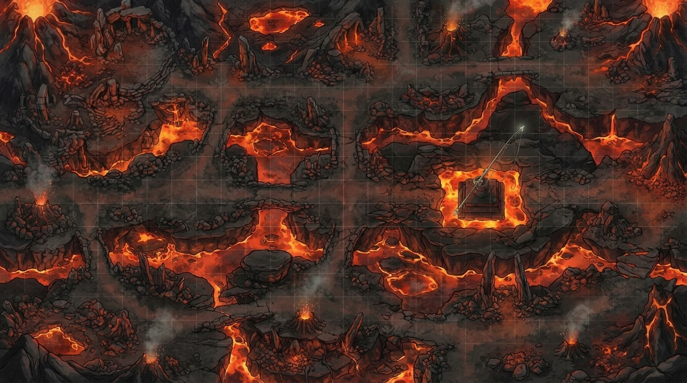
Mappa combattimento
Il Master può utilizzare questo ambiente per proporre incontri con creature resistenti al calore, predatori infernali e avversari capaci di sfruttare la conformazione del territorio. Gli ostacoli ambientali possono risultare pericolosi quanto gli stessi nemici.
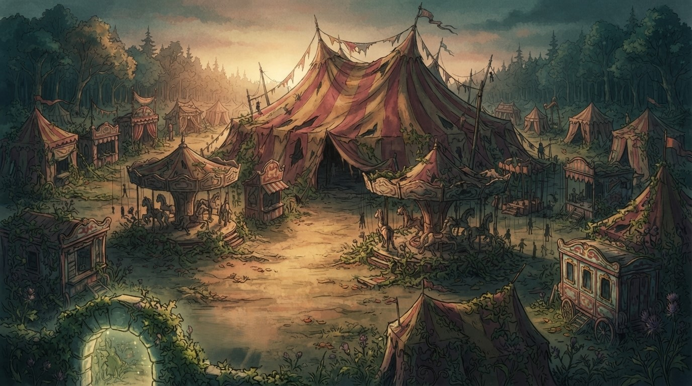
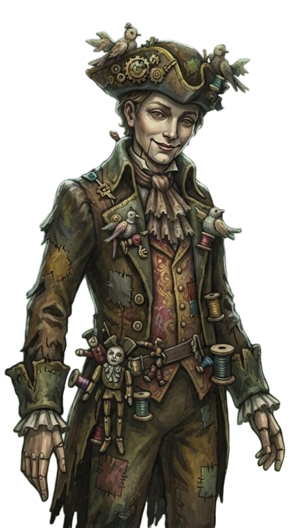
Regola generale
Il fallimento delle prove può innescare una trasformazione progressiva del personaggio in una marionetta. La metamorfosi avviene gradualmente: inizialmente alcune parti del corpo diventano rigide e assumono l'aspetto del legno; successivamente compaiono articolazioni innaturali e fili sottili che sembrano collegarsi al corpo. Nelle fasi più avanzate, i movimenti diventano sempre più difficili da controllare, fino alla completa trasformazione.
Il Master può gestire la progressione attraverso conseguenze narrative, prove ripetute o condizioni temporanee, adattandole al sistema utilizzato. La trasformazione completa comporta la perdita della libertà del personaggio, che diventa una nuova marionetta del Giocattolaio.
I° PROVA– Il Carosello dei Perduti
[Coordinazione e collaborazione]
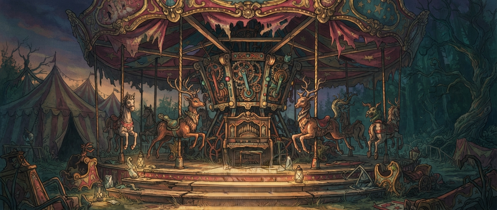
Il primo ostacolo è un'antica giostra circolare, collocata in una piazzetta al centro del circo. La struttura è decorata con figure dorate ormai consumate dal tempo, specchi incrinati e lampadine che si accendono e spengono irregolarmente. Al posto dei normali cavalli si trovano strane creature di legno: cavalli dalle zampe sproporzionate, cervi con corna intrecciate e altri animali fantastici. Alcune figure hanno volti stranamente umani. Al centro della giostra si trova un piccolo organo meccanico, collegato a diversi ingranaggi e leve. Sulla base sono presenti quattro maniglie colorate, disposte a intervalli regolari. Poco distante, un cartello consumato riporta la scritta:
“Per far partire lo spettacolo, ogni mano deve trovare il proprio posto. Da soli non si va lontano!”
OBIETTIVO: Gli avventurieri devono riattivare la giostra e raggiungere il lato opposto, dove si trova l'uscita verso la seconda attrazione.
SVOLGIMENTO PROVA: Quando qualcuno sale sulla piattaforma, la giostra comincia lentamente a girare. Le figure di legno iniziano a muoversi, mentre le quattro maniglie al centro si illuminano alternativamente. Gli avventurieri scopriranno che le maniglie controllano quattro diversi meccanismi:
SOLUZIONI ALTERNATIVE: Gli avventurieri possono trovare modi differenti per superare la prova. Potrebbero utilizzare corde, incantesimi, strumenti o capacità particolari per mantenere attivi i meccanismi, bloccare temporaneamente gli ingranaggi oppure raggiungere direttamente la piattaforma d'uscita.
FALLIMENTO: Un errore nella sequenza provoca un'accelerazione improvvisa della giostra. Le figure di legno iniziano a muoversi violentemente e gli avventurieri rischiano di essere sbalzati dalla piattaforma o trascinati contro gli ingranaggi. Chi fallisce ripetutamente può iniziare a subire la trasformazione in marionetta.
II° PROVA – Il Tendone degli Scherzi
[Comunicazione, osservazione e ingegno]
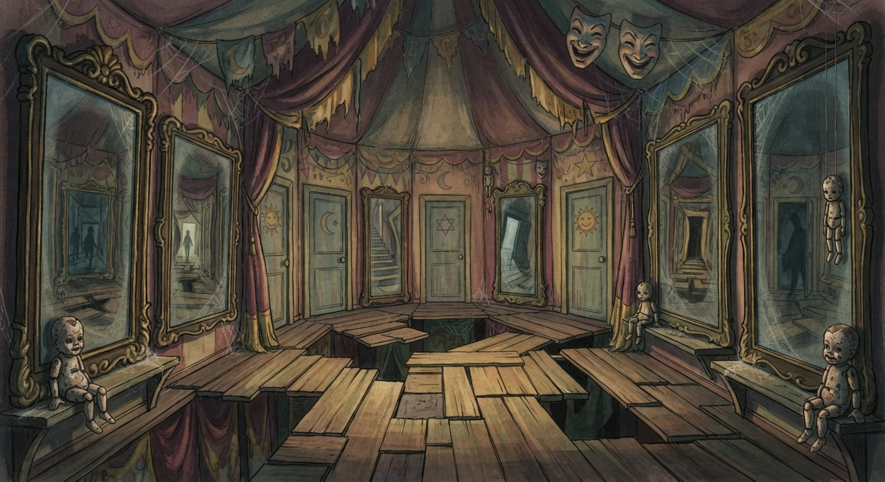
La seconda attrazione è un grande tendone dai colori sbiaditi, decorato con maschere sorridenti e figure grottesche. Al suo interno si trova un percorso composto da specchi, corridoi deformati, porte identiche e piattaforme mobili. L'ambiente sembra cambiare continuamente: alcuni corridoi si ripetono, gli specchi mostrano immagini differenti e alcune porte conducono sempre nello stesso punto, indipendentemente da quante volte vengano attraversate. Sulle pareti sono dipinti strani personaggi che indicano direzioni diverse. In alcuni angoli si trovano piccole marionette infantili, sedute su sgabelli o appese alle pareti.
OBIETTIVO: Gli avventurieri devono attraversare il tendone e raggiungere l'uscita, situata sul lato opposto.
SVOLGIMENTO PROVA: Il percorso è costruito in modo che nessun avventuriero possa vedere da solo la soluzione completa. Gli specchi mostrano particolari differenti a seconda della posizione di chi li osserva. Un personaggio potrebbe vedere simboli sulle porte, un altro scoprire che alcune immagini riflesse mostrano il percorso corretto, mentre un terzo potrebbe individuare le piattaforme che si attivano soltanto quando qualcuno si trova in un determinato punto. Per avanzare, il gruppo deve comunicarsi ciò che ciascuno riesce a osservare e combinare le informazioni raccolte.
Lungo il percorso si trovano tre porte contrassegnate da simboli: una luna, una stella e un sole. La combinazione corretta non è visibile da un unico punto, ma può essere ricostruita osservando gli specchi da posizioni differenti. Una volta individuata la sequenza, gli avventurieri dovranno raggiungere e aprire le porte nell'ordine corretto, aiutandosi a vicenda a superare i corridoi che le separano.
SOLUZIONE:Luna → Stella → Sole.
All'interno del tendone si trovano tre grandi specchi, collocati in punti differenti del percorso. Ognuno mostra un particolare che gli altri non possono rivelare.
FALLIMENTO: Una porta sbagliata riporta gli avventurieri all'inizio del percorso oppure attiva un meccanismo che altera la disposizione dei corridoi. Alcuni specchi possono inoltre intrappolare temporaneamente l'immagine di un personaggio, rendendo più difficile ritrovare la strada. I tentativi falliti alimentano la trasformazione in marionetta.
III° PROVA – Il Padiglione degli Orrori
[Combattimento e collaborazione sotto pressione]
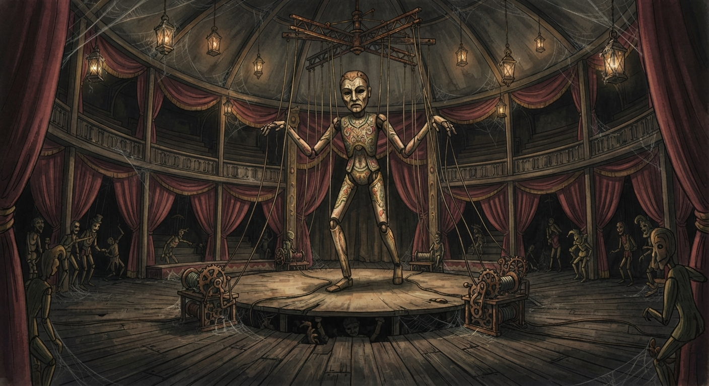
L'ultima attrazione è un grande padiglione circolare, illuminato da poche lanterne tremolanti. Le pareti sono ricoperte da vecchi manifesti raffiguranti creature mostruose, pupazzi deformi e spettacoli che sembrano appartenere a un'altra epoca. Al centro della sala si trova una grande marionetta dalle sembianze umanoidi, appesa a una struttura metallica attraverso numerosi fili. Attorno a essa sono disposte quattro postazioni meccaniche, ciascuna collegata a una parte differente del padiglione. Quando gli avventurieri entrano, la marionetta si anima. Dai lati della sala emergono altre marionette più piccole, che si preparano ad attaccare gli intrusi.
OBIETTIVO: Gli avventurieri devono sconfiggere le marionette ostili e interrompere il meccanismo che permette alla grande marionetta di controllare il padiglione.
SVOLGIMENTO PROVA: La grande marionetta è collegata alle quattro postazioni attraverso fili robusti e meccanismi nascosti. Finché questi collegamenti rimangono attivi, la creatura continua a muoversi e a controllare le altre marionette. Le quattro postazioni possono essere disattivate attraverso leve, ingranaggi o altri meccanismi, ma alcune richiedono che più personaggi collaborino per essere azionate. Quando tutti i collegamenti vengono interrotti, la grande marionetta perde il controllo delle altre creature e cade al suolo, ponendo fine allo scontro.
SOLUZIONI ALTERNATIVE: Gli avventurieri possono decidere di affrontare direttamente la grande marionetta, tagliare i fili che la collegano alla struttura oppure utilizzare incantesimi e capacità particolari per bloccare o disattivare il meccanismo. Il Master può adattare la difficoltà dello scontro al numero e alle capacità dei personaggi, senza rendere indispensabile una specifica strategia.
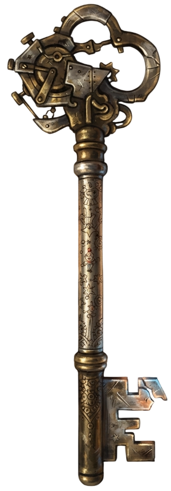
RICOMPENSA: Quando la grande marionetta viene sconfitta, il suo corpo si apre rivelando un piccolo scomparto nascosto nel torace. Al suo interno si trova la Chiave Difettosa, l'oggetto che gli avventurieri sono venuti a cercare. In quel momento, il Giocattolaio compare all'ingresso del padiglione. Osserva il gruppo con il suo solito sorriso artificiale e si congratula per aver completato lo spettacolo.“Bravissimi! Ma davvero bravissimi! Che spettacolo meraviglioso! Devo ammettere che non mi aspettavo tanta tenacia... e soprattutto tanta collaborazione! Avete giocato, vi siete aiutati, avete rischiato e, cosa ancora più importante, non avete abbandonato i vostri compagni. Non capita spesso di vedere uno spettacolo così ben riuscito! Ebbene, avete conquistato il vostro premio. La vostra tanto desiderata chiave!”
Si avvicina e porge la Chiave Difettosa agli avventurieri, tenendola delicatamente tra le dita.
“Prendetela, prendetela pure! Ogni buon gioco merita una ricompensa... anche se, a dire il vero, non tutti i partecipanti arrivano alla fine. È stato un piacere avervi come ospiti. E ricordate... nel mio circo c'è sempre posto per nuovi spettacoli!”
Uscita dai portali
Una volta recuperato ciò che erano venuti a cercare, il portale reagisce automaticamente alla conclusione della loro missione. La realtà circostante comincia a dissolversi lentamente,mentre una luce avvolge gli avventurieri. In pochi istanti, ogni cosa scompare e il gruppo viene ricondotto alla Galleria dei Mille Riflessi, ritrovandosi davanti al portale da cui era entrato. La superficie del portale torna immobile, lasciando dietro di sé soltanto il ricordo della realtà appena attraversata.
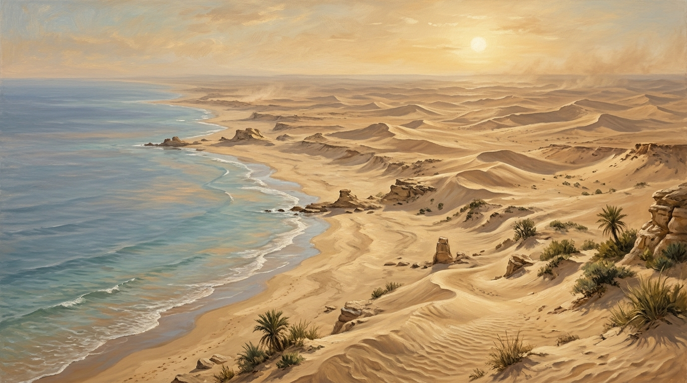
Proseguendo lungo la riva, il terreno diventa gradualmente più roccioso. La spiaggia lascia spazio a una stretta lingua di terra che costeggia il mare, fino a raggiungere un tratto dominato da alte pareti di pietra. È allora che vi accorgete di non essere soli. Poco più avanti, sopra un ampio sperone roccioso, si staglia una creatura enorme. Il suo corpo possente è ricoperto di scaglie, mentre due grandi ali ripiegate ne seguono il profilo. La sua presenza è imponente e maestosa: un drago. Poco distante, su una formazione rocciosa più bassa, si trova una seconda creatura. Ricorda il grifone che avete già incontrato nella Distesa dei Campanelli, ma presenta caratteristiche insolite. Il suo corpo è massiccio e ricoperto di piume, le zampe sono forti e artigliate, mentre la testa ricorda quella di un grande gufo. I suoi occhi, profondi e immobili, seguono attentamente ogni vostro movimento. Entrambe le creature sembrano presidiare il passaggio. Vi stanno osservando.
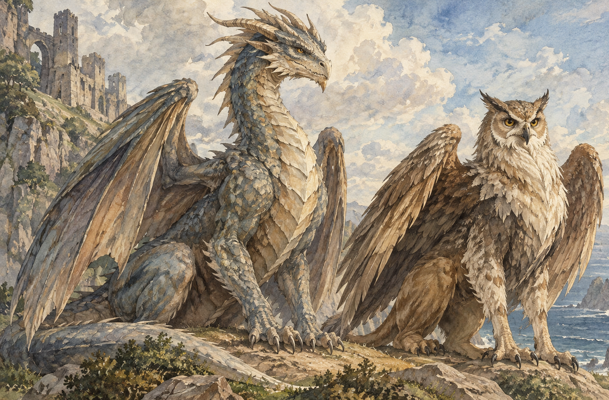
Per qualche istante nessuna delle due si muove. Poi il drago solleva lentamente il capo, mentre la creatura alata inclina appena il proprio, come se stesse cercando di riconoscere qualcuno tra voi. D anno l'impressione di essere in attesa. Il vento continua a soffiare lungo la costa, mentre le onde si infrangono contro le rocce. Davanti a voi, il passaggio prosegue oltre lo sperone roccioso, verso una parte della costa che ancora non riuscite a vedere.Le due creature incontrate sulla costa sono gli antichi Guardiani di Veestalia, custodi del territorio e delle sue antiche leggi. Il primo è un enorme drago, una creatura imponente e maestosa, dotata di grande saggezza. Il secondo è una creatura alata simile a un grifone, ma con una testa che ricorda quella di un grande gufo. Entrambi conoscono la vera natura di Dalia e sono consapevoli della sua origine divina. Riconoscono in lei una natura superiore alla propria e comprendono che il suo destino non è qualcosa su cui possano intervenire. Il loro compito è custodire Veestalia e preservarne l'equilibrio. Per questo motivo si limitano a osservare gli avventurieri, senza ostacolarli o offrire loro aiuto. La loro presenza deve mantenere un carattere solenne e misterioso. Non sono avversari da affrontare, ma figure antiche che osservano il passaggio degli avventurieri senza giudicarne le azioni.
Confronto finale
Il confronto tra gli avventurieri e le bambine costituisce il cuore dell'Atto III. Il Master deve lasciare che siano i giocatori a condurre la conversazione, evitando di anticipare informazioni o suggerire una soluzione. Le due bambine devono essere interpretate coerentemente con ciò che conoscono e desiderano: Alba vuole tornare dalla propria famiglia e spera che Dalia la accompagni. Dalia vuole aiutare Alba. Gli avventurieri possono cercare di convincere le bambine, rassicurarle, proporre alternative o spiegare loro i pericoli che potrebbero incontrare. Dalia non è in grado di comprendere pienamente la propria natura né le conseguenze della sua uscita. Anche se gli avventurieri le spiegano ciò che potrebbe accadere, la sua reazione deve essere quella di una bambina che cerca di comprendere qualcosa di troppo grande e complicato. Non è necessario risolvere il confronto con una singola prova di persuasione. Le decisioni devono derivare dalle conversazioni e dalle azioni dei personaggi, non dal risultato di un singolo tiro. Il Master deve inoltre considerare che gli avventurieri possono proporre soluzioni diverse da quelle inizialmente previste. Se una proposta è compatibile con le regole stabilite e con le informazioni disponibili, va valutata senza forzare il gruppo verso una delle conclusioni prestabilite.
Conseguenze decisioni
Le possibilità principali sono quattro.
Quando lasciate il Giardino di Auralis, Dalia e Alba sono al vostro fianco. Le due bambine sembrano felici. Alba è finalmente vicina a realizzare il suo desiderio di tornare dalla propria famiglia e Dalia, nonostante la sua iniziale esitazione, ha scelto di accompagnarla. Per qualche tempo tutto sembra andare per il meglio. Le due continuano a stare insieme, parlano, ridono e si comportano come due bambine che hanno appena intrapreso una nuova avventura. Dalia sembra curiosa di ogni cosa che incontra, mentre Alba è felice di poterle mostrare un mondo che fino a quel momento le era rimasto sconosciuto. Ma qualcosa è cambiato.
Quando riaprite gli occhi, vi ritrovate distesi sul pavimento della casa delle megere. L'aria è pesante, impregnata di odori acre e pungenti. Le pareti familiari, gli arredi e gli oggetti che ricordate vi confermano che siete tornati nel luogo da cui tutto è cominciato. Vi guardate intorno, cercando immediatamente le due bambine, ma non c'è traccia di loro. Non sapete quanto tempo sia trascorso, né cosa sia accaduto dopo aver lasciato il Giardino di Auralis. L'unica certezza è che siete nuovamente nella casa delle megere.
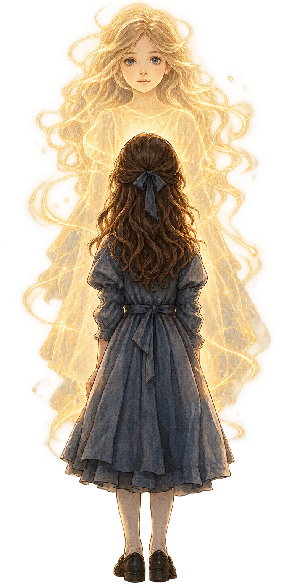
Poco dopo, un rumore proveniente da una stanza vicina attira la vostra attenzione. Una bambina compare sulla soglia. È Alba. Il suo aspetto sembra invariato, ma qualcosa nel suo comportamento appare diverso. Vi osserva per qualche istante, con un'espressione curiosa, quasi come se stesse cercando di riconoscervi. Poi sorride.Ma ormai avete capito. Davanti a voi c'è il corpo di Alba, ma l'anima che lo abita non è più la sua. Dalia ha preso il suo posto. Il piano delle megere è riuscito. L'anima della bambina divina ha sopraffatto quella di Alba e ora il suo potere si trova racchiuso in un corpo che non le apparteneva. Non sapete dove sia finita la vera Alba, né se esista ancora una possibilità di salvarla. Ma avete ritrovato la bambina.
Quando lasciate la casa delle megere, ad attendervi trovate Lord Eldric, accompagnato da alcune guardie. L'uomo sembra aver atteso a lungo il vostro ritorno. Non appena vi vede, il suo volto si illumina e il suo sguardo si posa subito sulla bambina che vi accompagna. Le si avvicina con evidente emozione, felice di poter finalmente riabbracciare la figlia. Per lui non ci sono dubbi: siete riusciti a riportargli a casa la sua amata bambina. Vi ringrazia ripetutamente, senza riuscire a nascondere la commozione. Le guardie vi consegnano la ricompensa promessa e Lord Eldric rinnova la propria gratitudine per aver ritrovato ciò che aveva di più caro.
La vostra missione è conclusa. Avete ricevuto la ricompensa e i ringraziamenti di un padre che crede di aver riavuto sua figlia. Ma mentre vi allontanate, una domanda continua a tormentarvi: cosa avete davvero riportato a casa?
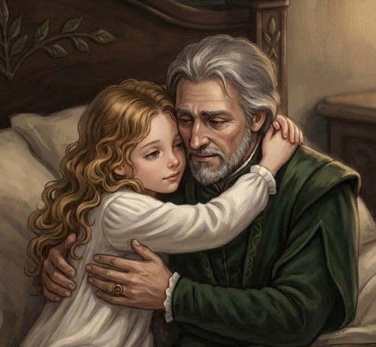
Quando riaprite gli occhi, vi ritrovate distesi sul pavimento della casa delle megere. Il silenzio che vi circonda è quasi innaturale. Vi guardate intorno, riconoscendo gli ambienti familiari, ma non trovate alcuna traccia delle due bambine. Dopo esservi ripresi, decidete di raggiungere il villaggio.Non sapete cosa vi attenda, né se Alba sia riuscita a tornare dalla propria famiglia. Quando arrivate, però, la vedete. È Alba. La bambina si è risvegliata e si trova accanto ai suoi cari. Quando vi nota, tuttavia, non mostra alcun segno di riconoscimento. Vi osserva con curiosità, come farebbe con degli estranei.La sua famiglia vi racconta che la bambina di è svegliata da poco. Alba stessa vi dice di aver fatto uno strano sogno, qualcosa che ricorda solo in parte: un luogo meraviglioso, una lunga avventura e forse un'altra bambina. Ma i ricordi sono vaghi, sfuggenti. Non riesce a raccontarvi altro e, soprattutto, non ricorda di avervi mai incontrati.
Poco dopo, Lord Eldric vi raggiunge. È visibilmente emozionato e non riesce a trattenere la propria gratitudine. Vi ringrazia per aver ritrovato la sua dolce bambina e per averla riportata a casa sana e salva. Le sue parole sono sincere, così come la felicità che traspare dal suo volto mentre guarda Alba giocare nuovamente accanto alla sua famiglia. Le guardie vi consegnano la ricompensa promessa. Lord Eldric vi augura ogni fortuna e vi assicura che il vostro gesto non sarà dimenticato.
La vostra missione è conclusa. Alba è tornata dalla propria famiglia. Potete finalmente lasciarvi alle spalle il Giardino di Auralis. Davanti a voi si aprono nuove strade, nuove terre da esplorare e nuove avventure da vivere. Ma forse, da qualche parte, una bambina continua a sognare un luogo che non riesce più a ricordare.
Quando riaprite gli occhi, vi ritrovate distesi sul pavimento della casa delle megere. Il silenzio che vi circonda è quasi innaturale. Vi guardate intorno, riconoscendo gli ambienti familiari. Dopo esservi ripresi, decidete di raggiungere il villaggio. Il tragitto vi sembra più lungo del solito. Le strade che attraversate sono le stesse di quando siete arrivati, eppure qualcosa nell'atmosfera appare profondamente diverso. Le abitazioni sono silenziose, le finestre chiuse e le porte socchiuse. Non si vedono bambini giocare lungo i vicoli, né si sentono le voci degli abitanti intenti alle loro faccende quotidiane. Qualche figura si affaccia timidamente dalle finestre al vostro passaggio, seguendovi con lo sguardo, ma nessuno sembra intenzionato a fermarvi. Vi dirigete verso la dimora di Lord Eldric. Il portone è aperto e alcune persone si sono radunate nei pressi dell'ingresso. Nessuno sembra fare caso al vostro arrivo. All'interno, la casa è immersa in un silenzio opprimente, interrotto soltanto da qualche singhiozzo e da voci sommesse provenienti dalle stanze più interne. Attraversate l'ingresso e vi fate strada tra alcune persone raccolte nel corridoio. Quando raggiungete la sala, vi trovate davanti a una scena terribile.
Lord Eldric è inginocchiato accanto al corpo della figlia. L'uomo non sembra più il nobile che avete conosciuto. Ha il volto sconvolto, gli occhi arrossati e le mani tremanti. Tiene Alba tra le braccia, stringendola a sé come se, con la sola forza del proprio abbraccio, potesse impedirle di andarsene. La stringe al petto e singhiozza senza riuscire a trattenersi. La bambina non respira più. Il suo volto è pallido e immobile, come se si fosse semplicemente addormentata senza più riuscire a risvegliarsi.Attorno a loro, nessuno osa avvicinarsi. Alcuni domestici sono fermi sulla soglia, incapaci di trovare le parole giuste; altri hanno il capo chino, mentre qualcuno si asciuga discretamente le lacrime. La casa, un tempo piena di vita e animata dalla presenza della piccola Alba, sembra improvvisamente diventata un luogo estraneo, svuotato di ogni calore.Lord Eldric non sembra accorgersi della vostra presenza.
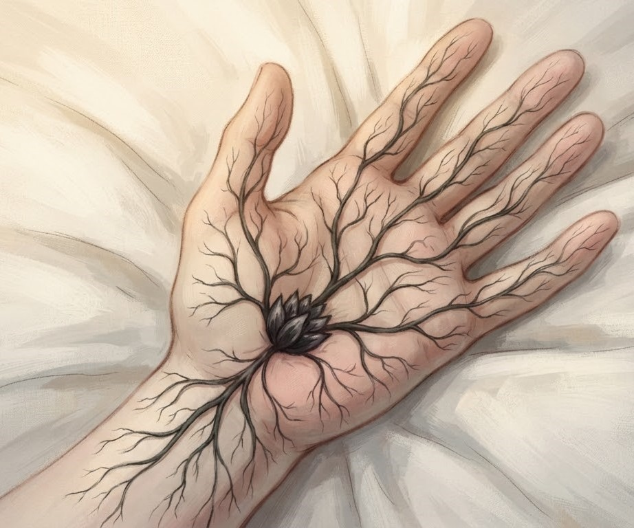
È allora che notate qualcosa sulla sua mano. Il simbolo che avevate già visto in precedenza è profondamente cambiato. Le sue linee scure si sono estese, ramificandosi sulla pelle e ricoprendo ormai l'intera mano, fino a raggiungere il polso. Sembra essersi propagato rapidamente, come una macchia inarrestabile, lasciando sulla pelle della bambina un'ultima, inquietante traccia. Lord Eldric continua a cullare lentamente il corpo della figlia, sussurrandole parole che non riuscite a distinguere, come se stesse ancora cercando di convincerla a svegliarsi. La vostra missione è finita, ma non nel modo in cui avreste sperato.Il Master dovrebbe invitare i giocatori a creare personaggi adatti a un'avventura di esplorazione, mistero e fantasia fiabesca, senza imporre particolari professioni, origini o archetipi. I personaggi possono provenire da ambienti e contesti molto diversi, purché abbiano una ragione per collaborare e affrontare insieme un viaggio che potrebbe rivelarsi ben più pericoloso del previsto.
È preferibile che i personaggi si conoscano già e condividano un legame, un'esperienza passata o una motivazione comune che li abbia portati a intraprendere questa avventura. Non è necessario che siano amici di lunga data: possono essere compagni di viaggio, alleati occasionali o persone unite da un obiettivo condiviso.
Una volta completate le schede, il Master dovrebbe porre ai giocatori alcune domande aggiuntive, con l'obiettivo di raccogliere pochi elementi del loro background da utilizzare durante l'avventura. Non sono richieste storie elaborate o particolari dettagli biografici. Sono sufficienti risposte brevi e spontanee, che permettano al Master di conoscere meglio i personaggi e di individuare ricordi, desideri e legami personali da richiamare nel corso della storia.
Hai completato la lettura di questa one-shot. Vuoi ricevere altre avventure pronte all'uso, risorse esclusive per Master e unirti a un tavolo attivo di creatori e giocatori?
 Discord
Discord
 Ko-Fi
Ko-Fi
 YouTube
YouTube